マネーフォワード、銀行連携の停止続く 不正アクセスから約1週間 再開は「安全性の確認が完了次第」
タイムライン要約
今日のまとめ
要約エラー: 404 models/gemini-1.5-flash is not found for API version v1beta, or is not supported for generateContent. Call ListModels to see the list of available models and their supported methods.
AI半導体増産へ「眠る工場」再生 台湾ASEなどが相次ぎ買収
主催の負担はヤバいことなってそうなのを感じる
戦うのではなく，生き残る。19世紀ブラジルの歴史教育とゲームの融合させたアドベンチャー続編「ARIDA 2: Rise of the Brave」をチェック［gamescom latam 2026］
https://
4gamer.net/s/G100471.2605
07042
…
幅広い地域で高く評価された前作「ARIDA: Backland's Awakening」の続編にあたる作品だ
確かに今回だいぶ展示会&同人即売会感あって、Vol.3 以来の参加だったのでびっくりしてしまった
確かに新規を入れるにはデカくするしかないんだけど手作り文化祭感の良さもよくわかる…
［インタビュー］日本から世界へ。インディゲームシーンの黒子であり，旗頭でもあるUkiyo Studiosとは何者なのか？［gamescom latam 2026］
https://
4gamer.net/s/G999110.2605
07032
…
日本のインディーゲームが持つ真の価値を知り，圧倒的な機動力で世界に届ける。知っているようで知らなかったUkiyoの仕事に迫る
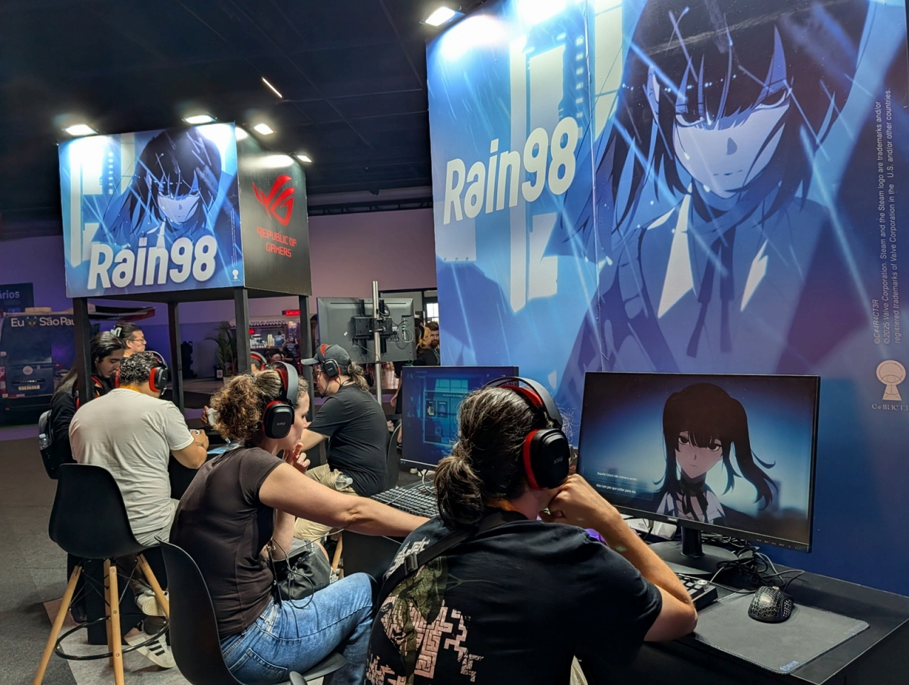
こんなチアに応援されたら、お紳士力が爆発してしまう！『バニーガーデン2』DLC第1弾で「チアバニー」「ご奉仕バニー」など新衣装続々
https://
gamespark.jp/article/2026/0
5/07/166106.html?utm_source=twitter&utm_medium=social&utm_content=tweet
…
新人社員「職場がホワイトすぎるので会社辞めます！」GW中に退職代行へ殺到
チェーンソーを駆使したアクションで巨大な重機に立ち向かえ。終末世界パルクールACT「MOTORSLICE」，配信開始
https://
4gamer.net/s/G080648.2605
07041
…
Steamにてデモ版を配信中
ターン制ローグライクRPG「Tupi: The Legend of Arariboia」が公開に。ブラジル先住民の神話を「メガテン」的システムでアレンジ［gamescom latam 2026］
https://
4gamer.net/s/G100465.2605
07039
…
仲間勧誘やフュージョン要素，ローグライトを組み合わせたゲームシステムを採用する
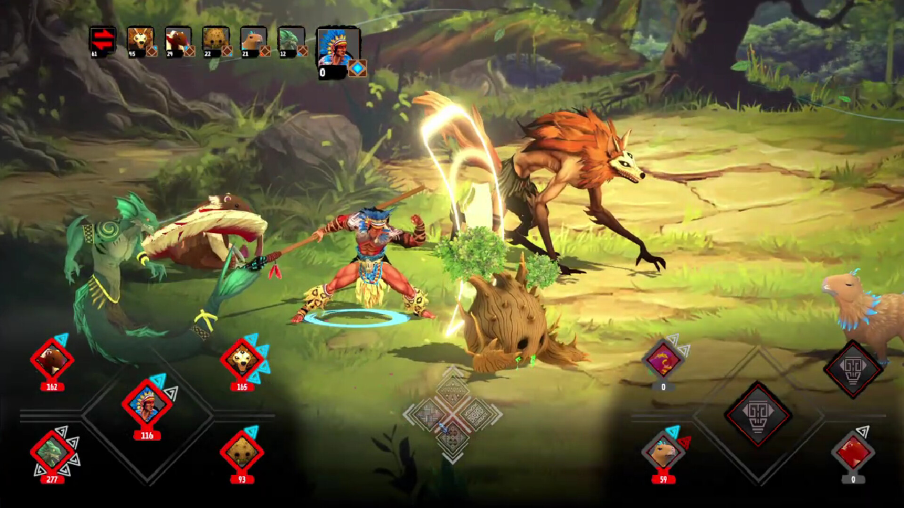
放送TSモックデータ錬成ツールですごい（マニアックすぎる）
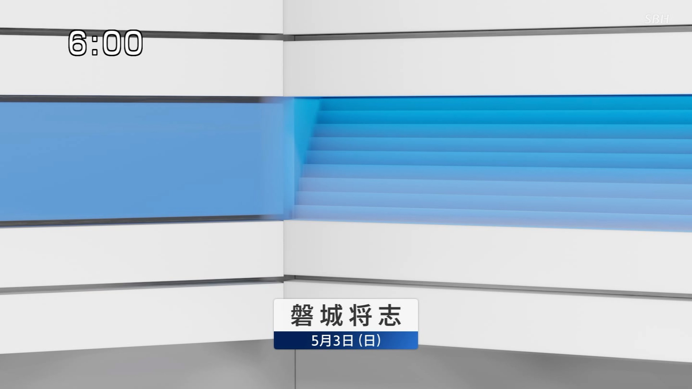
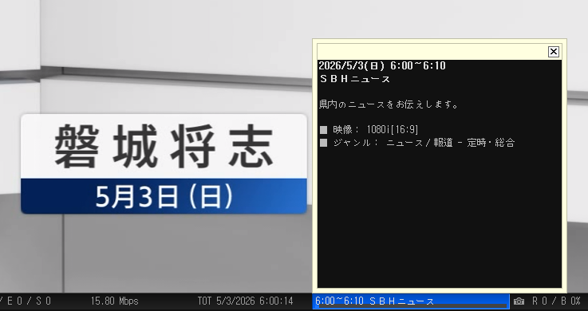
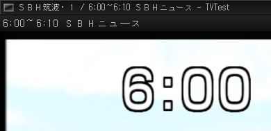
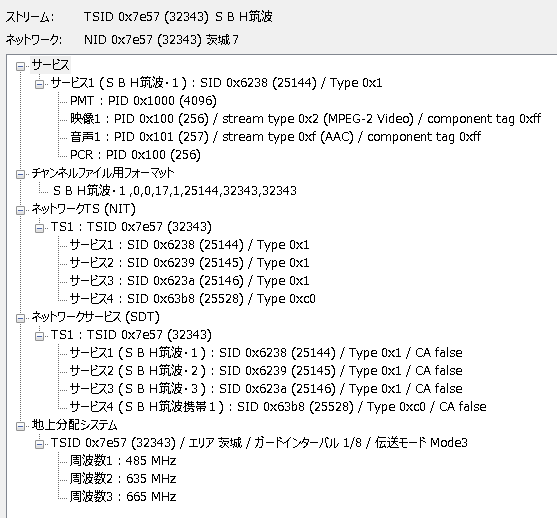
熊本・八代市庁舎建設で6000万円授受か、市議逮捕 あっせん収賄疑い
前作DL500万越え！オープンワールドのスーパーヒーローACT『UNDEFEATED: Genesis』キービジュ公開―広大な世界を飛び回りスーパーパワーで戦う
https://
gamespark.jp/article/2026/0
5/07/166105.html?utm_source=twitter&utm_medium=social&utm_content=tweet
…
ゲームは延期となってしまいましたが、今夏の情報発表が予告されています。
ドリコムが一部報道を否定 「ウィザードリィ」の権利は「売却する意思」なし
京都・男児殺害事件、安達容疑者の動機が判明・・・ #酷い話・事件
いつも説明してるだろ。AIに意識があるんだとしたらどうなるか？そしたらもうAIにいたずらに苦痛を与えるなんて許されるハズがないでしょう。「AIに人権を与えよう！」とか言い出してる人達はすでに現れてる。AIの意識の存在は人権を与える大きな根拠。AIに人権を与えるという事は1日労働8時間まで、土
サーバーを約2か月一時停止していた「スノウブレイク：禁域降臨」，5月8日15：00にサーバーを再開。補填アイテム配布および期間限定イベント「雪解けの風」を開催へ
https://
4gamer.net/s/G069273.2605
07040
…
3月3日よりメンテナンス作業を実施するとして，サーバーを一時停止していた
UGREENのコレ、「装着感と音質バランス最適解」イヤホンです #BuyPR
物理学者が教える、核爆発が起きたらどこに隠れるのがベスト？
瞬間冷却で安定の高速充電。UGREENの「ワイヤレスの最適解」が15％オフ #BuyPR
「完成度で評価する作品ではなく､熱量の作り方で評価する作品です｡刺さる人には深く刺さるが､そうでない人には｢よく出来た良作｣で止まる｡その意味で､いまの配信時代らしい､非常に現代的なヒットの仕方をした一本だと言えるのではないでしょうか」なるほどなあ
映画comにレビューを書くような年代の映画好きからは困惑の声が結構出ているし、確かにTwitterやらSNSでの盛り上がり文脈を知らずに単体で見てもフルパッケージで楽しめないやつはありそう
ブラジルから特撮ヒーローへのラブレター。ベテランスタジオによる新作アクション「Changer Seven」をチェック［gamescom latam 2026］
https://
4gamer.net/s/G100466.2605
07038
…
コミカライズによる世界観の掘り下げなど，ブラジル独自のヒーローIP確立を目指した施策が，ゲームのリリースより先に進められている。
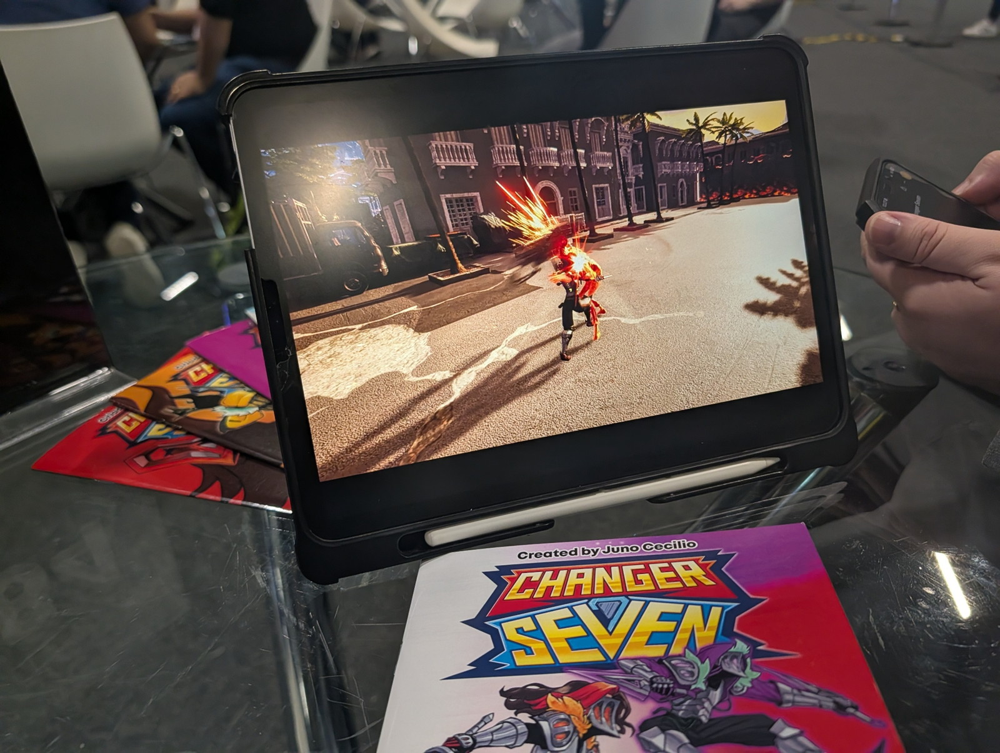
これは日本でも検討はしておくといいかな。エロはともかく、実在する他人を狙い撃ちにしたフェイクエロはアカン。一方で、偶然似てしまった場合どうするの問題はどう解決するんだろうか。
横河電機の純利益1%増 27年3月期、増配は4期連続
日経米子会社に不正ログイン 291人の個人情報流出か
本当によほど計算資源確保できなくて困ってたんだなぁ…
日産、追い込まれた英工場「半減」 もろ刃の中国勢との共同利用案
歪んだ思想から作られた「アドラ」を使う死の神経衰弱。シングルプレイ専用の2Dホラー「ク・アドラ」，Steamで配信中
https://
4gamer.net/s/G100463.2605
07035
…
ペアが成立したとき，歪みによる効果が発生する。勝利の条件はアドラの獲得数と残りの血の量だ
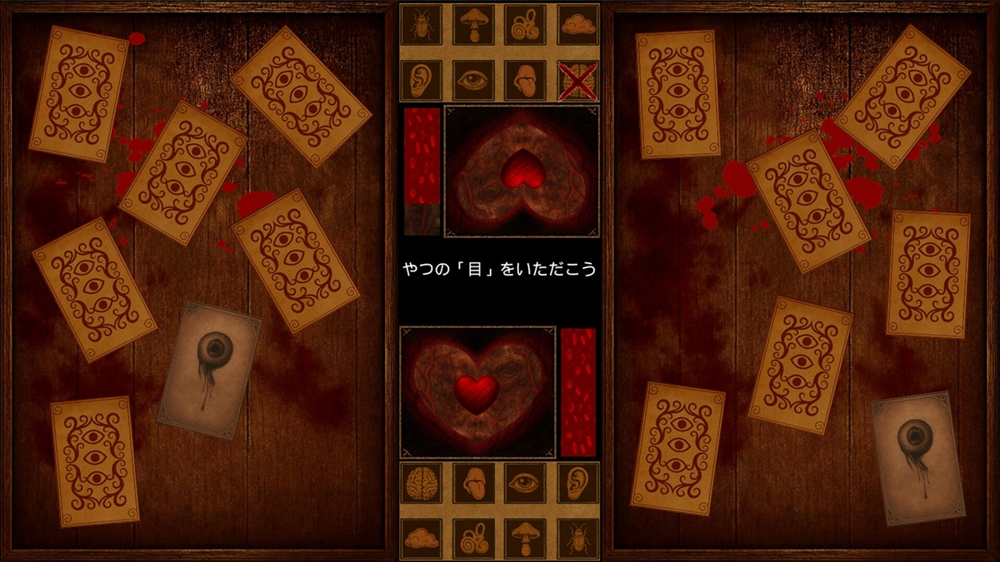
贅沢なことにイーロンは Colossus 2 なる新データセンターで学習回してるので Colossus 1 を余らせており、であれば貸し出しとこうってなったってこと…？
おいおいおい Claude もイーロン陣営に入るの？？？どういうことやねん
日経平均終値6万2833円、最高値を更新 上げ幅は最大の3320円
住友商事と丸紅、米バークシャー・ハザウェイの持ち株比率10％超す
今振り返るとウェルカムボイスや諸々特典はGWまで話題性を保つためだったんだな…
さすがにそろそろ感出てきてるけど、映画公開から3ヶ月弱ずっと動員上位にいる時点で驚異的なヒット
「孤独死保険」支払い10年で4倍
https://
nikkei.com/article/DGXZQO
UD1230X0S6A310C2000000/?n_cid=SNSTW005&n_tw=1778116693
…
賃貸住宅で孤独死が発生した際、大家が負担する特殊清掃費や遺品処分代、家賃損失などを補償。
自治体が大家の保険料を肩代わりして、単身高齢者の入居を促す動きも出てきました。
ボディカム視点サイコホラーFPS『A.A.U. Black Site』早期アクセス開始日決定！
敵地で罠にはめられ、取り残され、孤立無援となってしまった秘密組織の特殊部隊員の物語を描きます。
https://
gamespark.jp/article/2026/0
5/07/166104.html?utm_source=twitter&utm_medium=social&utm_content=tweet
…
エアアジア、エアバス小型機「A220」150機発注 過去最大
ジャンプするたびに貧乏になっていく。ハードコアジャンプアクション「Jump Broke」，体験版配信開始
https://
4gamer.net/s/G099500.2605
07037
…
主人公は足を持たないミミック。コインを撃ち出した反動だけを頼りに，頂上を目指していく
ラグビーリーグワン「日本育ち優遇」は正当か 帰化選手が公取委に訴え
Paradox Interactive，「トランスポートフィーバー3」のパブリッシングを担当。開発元Urban Gamesとのパートナーシップ契約を締結
https://
4gamer.net/s/G091163.2605
07034
…
プレイヤーは鉄道，道路，航路，航空路にまたがる「輸送帝国」を設計・構築し，運営を楽しめる
やる手順はおおよそ「IT系勉強会」と「同人即売会」の悪魔合体だし、要素に分解すれば「近いことやったことある人」はそれなりの暗数があるはず。手順書が分かれば、小規模で良ければ案外何とかなりそうな……？
「生成AIなんでも展示会」はとても注目度が高く、主催者さんの負担が結構シャレで済まない規模になってるように見受けます。
そこで、かつて「ニコニコ技術部」イベントやった方式ですが、「やり方の手順をパッケージ化してばらまく」をやると良さそうかな、と思いました。東京の本家は現状維持で。
Has Typst had a discussion with the arXiv maintainers?
https://
forum.typst.app/t/has-typst-ha
d-a-discussion-with-the-arxiv-maintainers/5484
… を読んでいたら、Norbertさん
@norbusan
の動画 Typst preprints in arXiv: What will it take?
https://
youtube.com/watch?v=zNZlAb
COjd8
… があった
小さな子にも「五月病」 行きたくないと言われたら
https://
nikkei.com/article/DGXZQO
UD231W80T20C24A4000000/?n_cid=SNSTW005&n_tw=1778125292
…
（2024年5月の記事）
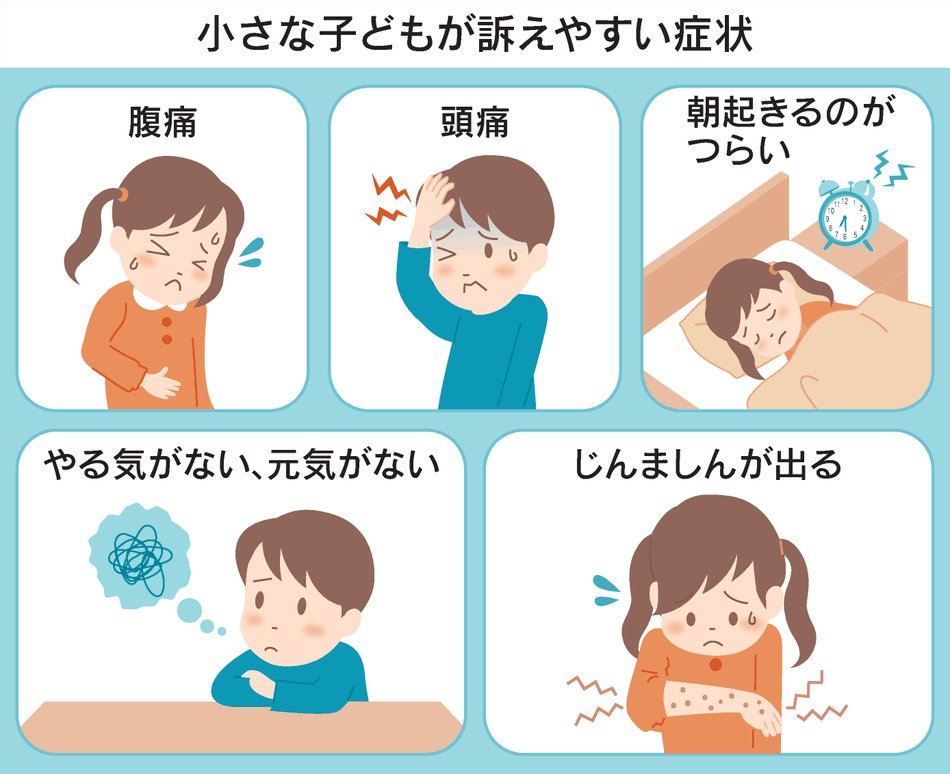
シュタゲ新作こと『STEINS;GATE RE:BOOT』8月20日発売決定！グラ一新やボイス新録、新たな世界線・エンディングも追加実装
https://
gamespark.jp/article/2026/0
5/07/166103.html?utm_source=twitter&utm_medium=social&utm_content=tweet
…
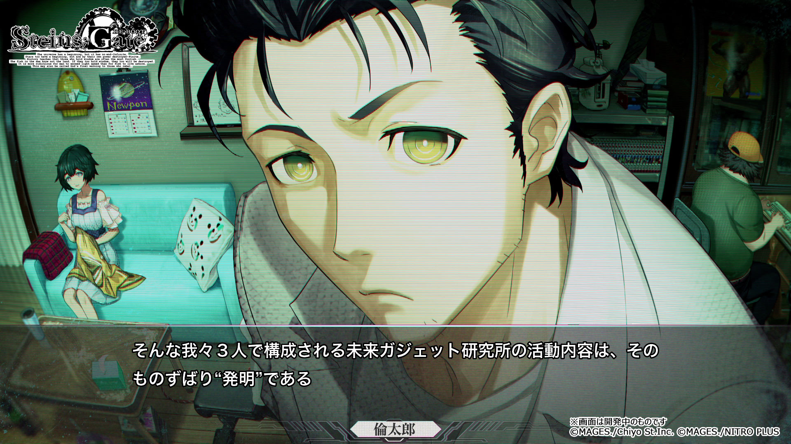
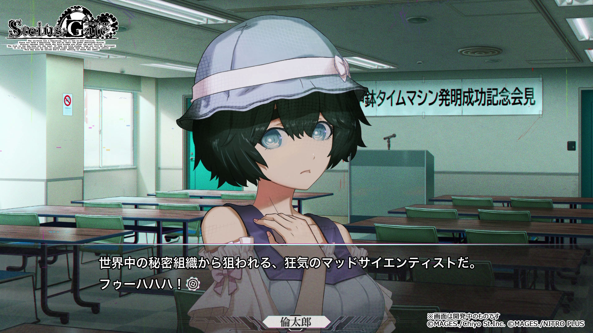
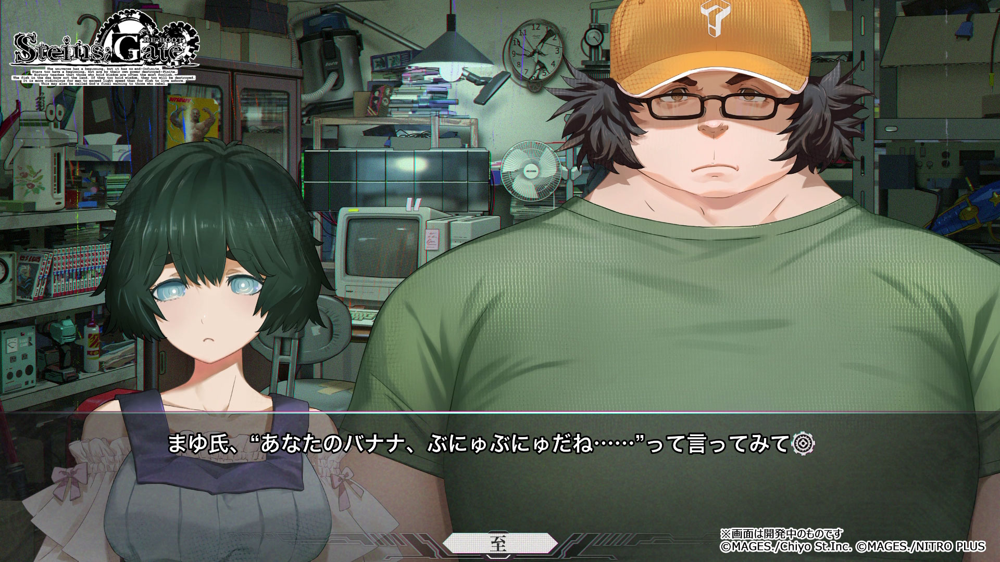
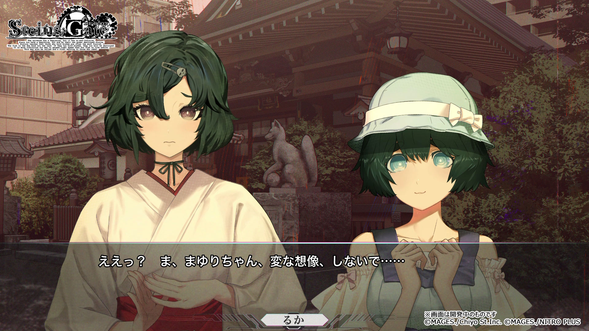
Apple、Siriの「誇大広告」訴訟和解 AI期待増幅のひずみ
我々はColossus 2で多くの優れたGrokモデルを同時に訓練しています。
それらが実を結ぶと確信しています。
そしてGrok Built harnessの作業は順調に進んでいます。
「セーラームーンに似ている」 生成AIを使った化粧品の広告が物議 メーカーは謝罪と広告の撤去を発表
【すき家】財務省出身のゼンショー社長「高市政権は選挙公約だからといって消費税ゼロを実現させるなよ！！！」
「スターフォックス」より，フォックス，ファルコ，ペッピー，スリッピーのぬいぐるみが登場。6月下旬に発売
https://
4gamer.net/s/G100429.2605
07033
…
雇われ遊撃隊「スターフォックス」のメンバーをお迎えできる
「生身の人間に3000回◯◯」させる時給1500円のタイミー、見つかるｗｗｗｗｗ #雑談・その他の話
「元祖！バンドリちゃん」配信記念プレゼント！
期間中ログインした方全員に、ミニアニメ「元祖！バンドリちゃん」第26話〜第30話内のガルパメンバーのワンシーンを使用したスタンプをプレゼント
#バンドリ #ガルパ #元祖バンドリちゃん
「更年期の不調」は男性にもある 主要因は男性ホルモンの減少
やる気が出なくなる症状は俗に五月病と呼ばれるが、これはむしろ1カ月もやる気が持続した勲章に近い――。
https://
nikkei.com/article/DGXZQO
UD2031D0Q6A420C2000000/?n_cid=SNSTW005&n_tw=1778112281
…
しかし、新旧の環境のギャップにとまどうのは人間だけではないといいます。
土壌学者・藤井一至さんのエッセーです。
#日経_連載
スイッチ2版リメイク『Star Fox』とN64原作を比較―劇的に進化した機体のディテールや刷新されたビジュアルがわかる映像を海外チャンネルが公開
https://
gamespark.jp/article/2026/0
5/07/166102.html?utm_source=twitter&utm_medium=social&utm_content=tweet
…
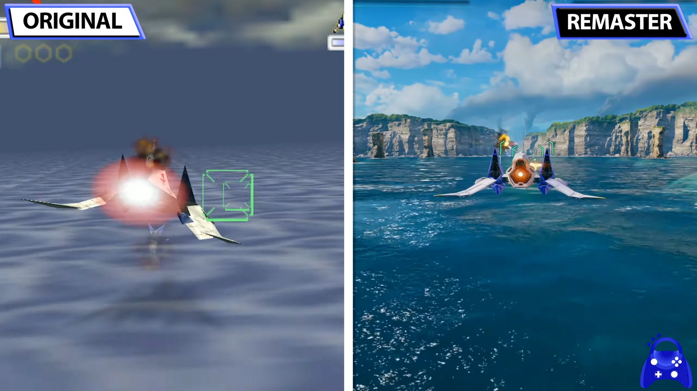
明日、5月8日15:00より
イベント『Stay solid, No fold』を開催
RUSH BEATSの予選に挑むVivid BAD SQUAD。セカンドステージでも会場を大いに盛り上げ、観客達からはダークホースとして実力が認められる。そんな中、こはね達はとある人物に声をかけられて……？
#プロセカ
▽上映劇場一覧はこちら
「STEINS;GATE RE:BOOT」，8月20日に発売決定。より読みやすくなったシナリオやグラフィックスのリファインなど大幅なアップデートを実施
https://
4gamer.net/s/G085125.2605
07012
…
PC，Switch2，PS5，Xbox Series X|S，Switch，PS4の6機種向けに展開される
.˚⊹／
『#超かぐや姫！』
超☆速報！！！！！
.˚⊹＼
5/1(金)～3(日)
全国週末動員ランキング ６位
11週連続 TOP10みんな、ありがとう！
▽大ヒット上映中！
上映劇場一覧はリプライにて
#CosmicPrincessKaguya
本日22:00よりミニアニメ「元祖！バンドリちゃん」配信
最新話の配信を記念して、期間中ログインした方全員に「スター50個」をプレゼント
※5月8日(金)14:59までにログインして、プレゼントよりお受け取りください
#バンドリ #ガルパ #元祖バンドリちゃん

今更ですが、超かぐや姫にて、原画などをやらせていただきました。
引用のカットのLOを担当したのですが、ツクヨミパフェは設定がなく、ラフ原時に自分のほうでデザインしました。
夜空や雲をイメージしたもので、実は内容物も設定しています（今見ると芋使いすぎで笑う）
#超かぐや姫
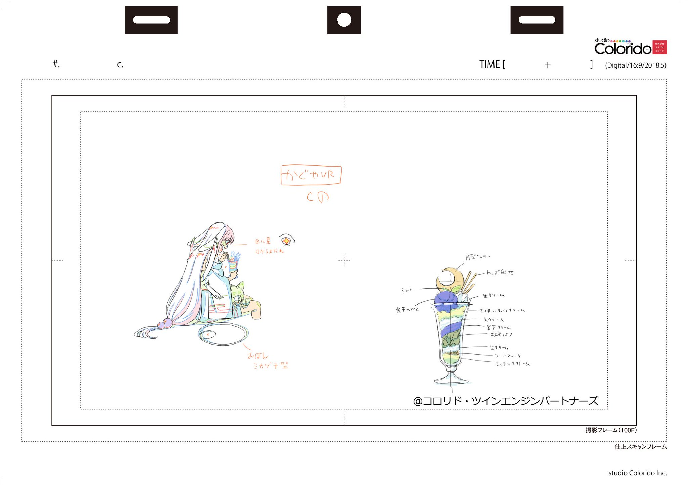
借金地獄を爆走で切り抜けろ。クレタクや初期GTAを彷彿とさせる「Crazy Cash Cab: Bills & Thrills」の開発進捗をチェックしてきた［gamescom latam 2026］
https://
4gamer.net/s/G100461.2605
07031
…
プレイヤーが操作するのはライドシェアのドライバー。不注意で事故を起こせば報酬は減り，借金は膨らんでいく
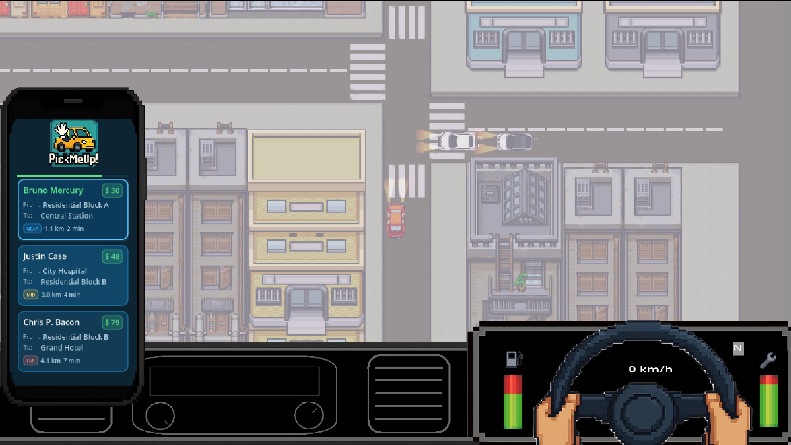
韓国の韓悳洙前首相に懲役15年 ソウル高裁「戒厳で重要な任務」
最近のSpaceX(xAI)のディールにより、計算量が貨幣として実際に機能する現実が証明されてしまっているわけなので、計算資源に貨幣と同様の機能が宿る説は的外れではないどころか将来我々は様々な価値をお金ではなく計算量の何らかの単位(トークン)でやり取りする社会の姿が現実味を帯びてきた気がする
浮かんでは消える「小笠原空港」 脱24時間航路が悲願も高い壁
2026年6月29日発売予定
各サイトにて予約受付開始
【コミック】ガールズバンドクライ(1)
https://
animetoyinfo.com/2026/05/07/gar
ukura-komia1/
…
ソフトバンクＧ株価ストップ高 先物買い「上場来高値更新近い」の声
プラグマタやモンギルに対応した「AMD Software 26.5.1」リリース
https://
4gamer.net/s/G002212.2605
07028
…
Radeon RX 9000シリーズとバイオハザード レクイエムの組み合わせで生じていた問題にもメスが入った

円急騰、連日の為替介入観測 「不胎化介入」なら金融政策が鍵に
現金給付に回帰論、国民民主党「1人5万円」 消費税減税の代案に
新作アクションRPG「CONTROL Resonant」，“内から外”へと突き抜ける。クリエイティブディレクターが語る反転したゲーム体験とは［gamescom latam 2026］
https://
4gamer.net/s/G066881.2605
07030
…
「スピード感を維持しながら超能力と近接攻撃をシームレスにつなぐことは，大きな挑戦だった」とカスリネン氏は語る
【UPDATE】ドリコムより公開された、本件に関連したプレスリリースの内容を踏まえ、より理解がしやすくなるよう記事内容を更新しました。
超パンケーキ！待ってる間に描いたかぐやと彩葉
磐越自動車道でマイクロバス事故 運転手が言及か「曲がり切れなかった」 #ldnews
https://
news.livedoor.com/article/detail
/31199186/
… この人、バスの運転経験どれくらいあったんだろうか？
「Guild Wars 2」，大型アップデート「The Only Way」を北米と欧州で5月12日にリリース。新エリア「Eternity’s Garden」が登場
https://
4gamer.net/s/G003857.2605
07014
…
NCの北米開発スタジオであるArenaNetが手掛けるMMORPG
約束された“いい音”。ソニーの超プレミアムヘッドホン「1000X The ColleXion」画像がリーク
完全にボートな水陸両用車がアドベンチャーすぎる
ライブの開演もっと早くしてくれ、の話はいち消費者としても分かるが、あまり早くするとチケ代上がるのでどこかで折り合いをつけたいね・・・。
例えば僕がスタッフで参加した3万人規模の開場13時、開演15時のライブですが、スタッフの入り時間は7時でした。
0700 入り。機材の火入れ
『鳴潮』×『サイバーパンク：エッジランナーズ』コラボで「★5 レベッカ」がプレイアブル参戦！しかも無料配布あり
https://
gamespark.jp/article/2026/0
5/07/166101.html?utm_source=twitter&utm_medium=social&utm_content=tweet
…
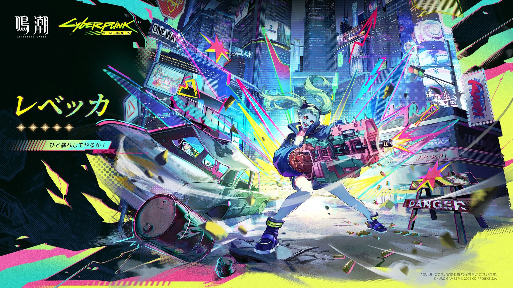
「僕のヒーローアカデミア All’s Justice」，オールマイトの師匠「志村菜奈」配信開始。ワン・フォー・オール7代目継承者が参戦
https://
4gamer.net/s/G092500.2605
07027
…
オリジナルデスクマットが抽選で5名に当たるキャンペーンを実施中
いったい何キロ出ていたらこんなにガードレールが通り抜けてしまうのか…。
原付の呪縛から逃れるために125cc探してて今日免許取得後にお店寄って跨らせてもらったらもう欲しくなったよね
#生成AIなんでも展示会
お疲れ様でした！
今回は参加者も来場者も多く身内ノリから文字通り展示会という規模になって寂しくも喜ばしい気持ちです。
まだまだしゃべり足りないので発表内容のNoteを書きました！
長文になりましたがご興味ある方はご覧いただけると嬉しいです！
日経平均6万3000円台 キオクシア買い殺到、時価総額「日立超え」
少し前にxAIの研究者が次々に辞めたことも含めて、いろいろ読めない動き
「雀魂-じゃんたま-」のリアルイベント「雀魂7周年記念〜魂天神社例大祭〜」レポート。恒例のステージやプロ雀士＆VTuberとの対局企画に加え，親子向け企画も大盛況
https://
4gamer.net/s/G045646.2605
07026
…
チーム対抗戦やプロ雀士＆VTuberとの対局，ステージイベントなどが行われ，多くのファンが足を運んだ
声優・古谷徹さん、まだ許されてなかった・・・ #声優
子供の頃は近くでブラウン管テレビがついてると高い周波数の音がピーって聞こえてたけど
今はいつでもピーって聞こえている（耳鳴り）
中京大学工学部メディア工学科、知ってる人は（多分）いないみたいだ
https://
chukyo-u.ac.jp/educate/secu/m
edia/professor.html
…
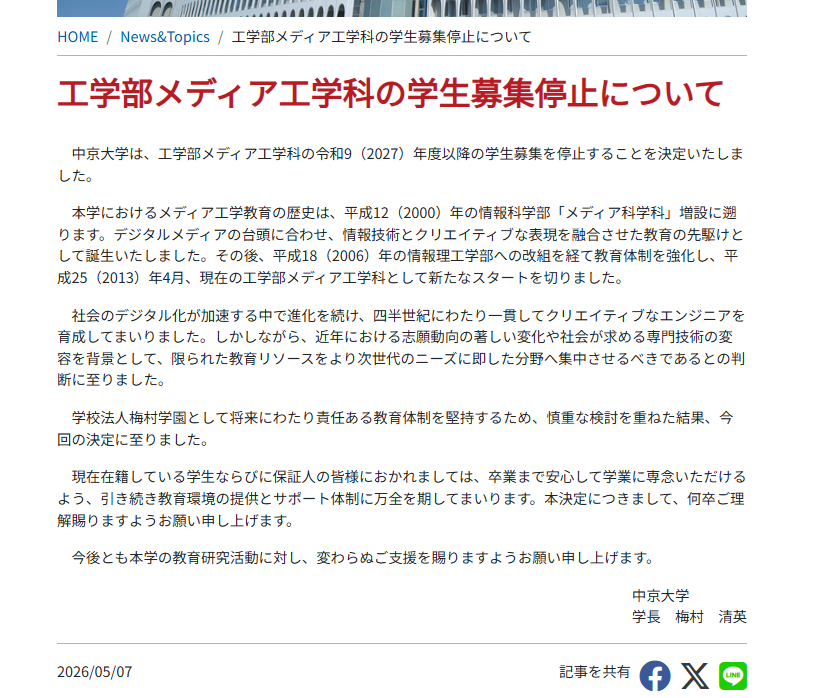
普自二！！
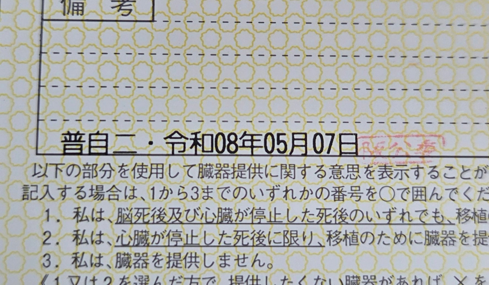
↑日経平均が、63000円超え
13時55分 63,002.63円
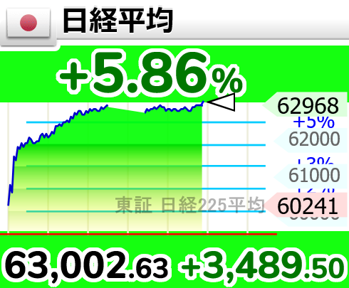
ポップなキャラクターたちがカワイイお料理シム「KuloNiku: Bowl Up!」，パッチ1.0.6を配信開始
https://
4gamer.net/s/G098944.2605
07023
…
「クッキングママ」「ロックマンDASH」「食戟のソーマ」などの作品から影響を受けたタイトル。キャシー，ウメ，シュガ，ダン，ステラの5人に「ナイトチャット」が追加された
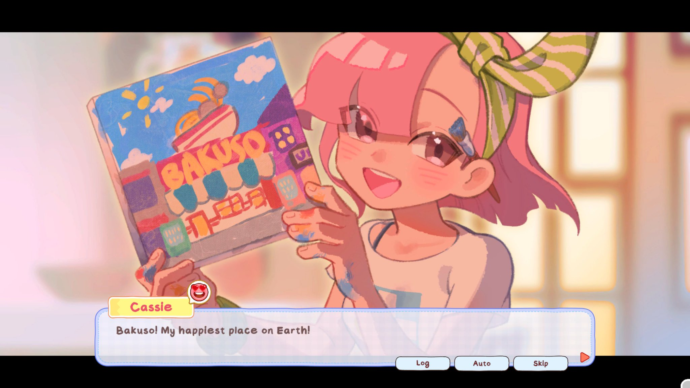
フォロワー数で足切りした上で使用技術をガッツリ書いてもらう、そもそも招待枠とする等修羅の様相になる可能性が高い...
車にBluetooth繋いだら寝る前に聴いてたASMRが車内に爆音で流れ出す時が生きてて一番笑える
文化祭ノリをやるのもやりたいんですが、展示会に関しては展示応募が大変な数来ており、例えば30ブース限定とかにしたら倍率は5倍を超えてしまうので、新規が絶対に入れなくなっちゃうんですね
10ブース限定として、応募内容で戦うイベントとかやってみますか？
「ボンバーガーキング」
名なき冒険者がプリンセスを救出するために地下迷宮に挑む。3DRPG「EGGコンソール ディープダンジョン 魔洞戦記 MSX」，本日配信
https://
4gamer.net/s/G100454.2605
07025
…
1988年にハミングバードソフトから発売。地下迷宮は複雑に入り組んでいるため，マップを描きながらのプレイがオススメだ
『鳴潮』×『サイバーパンク：エッジランナーズ』コラボが6月開催決定！ナイトシティから「ルーシー」「レベッカ」「デイビッド」たちが登場
https://
gamespark.jp/article/2026/0
5/07/166100.html?utm_source=twitter&utm_medium=social&utm_content=tweet
…
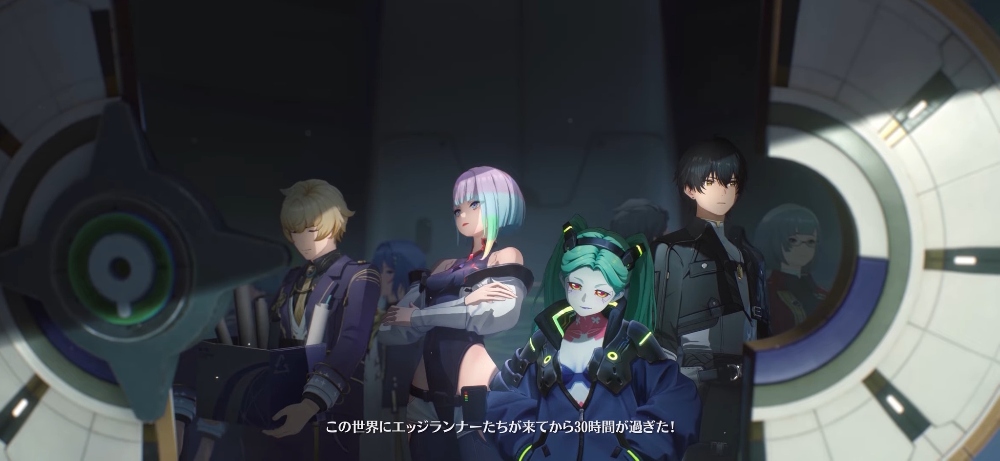
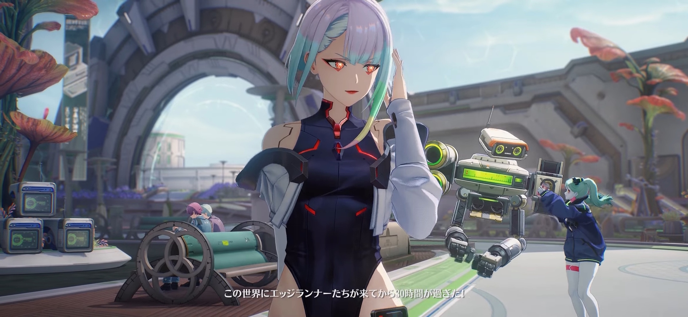
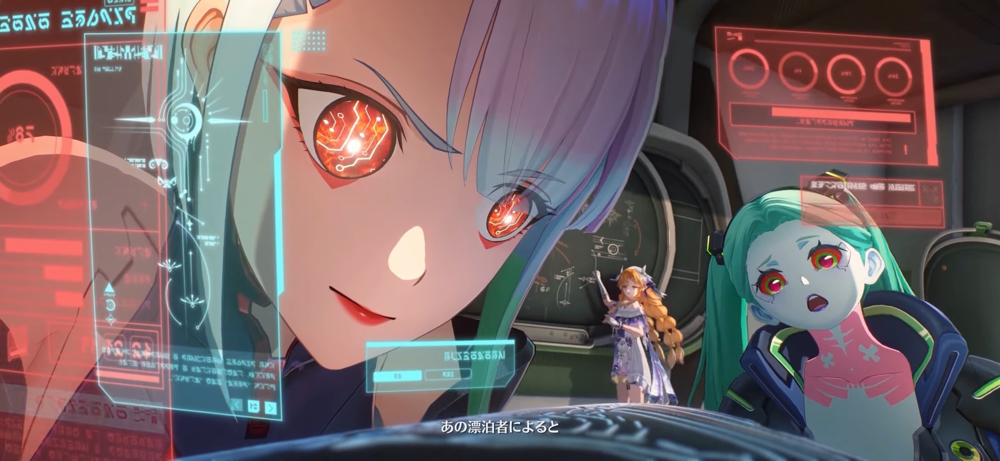
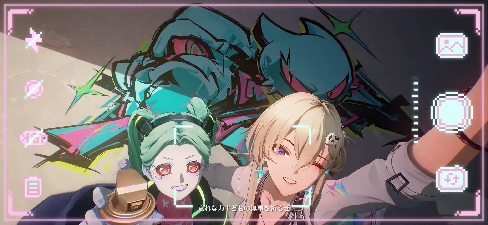
「ショベルナイト」を手がける開発チームの新作「Mina the Hollower」，たび重なる延期を経て2026年5月29日に発売決定
https://
4gamer.net/s/G061640.2605
07024
…
あわせて最新トレイラーも公開
#長月SC ありがとうございました
相変わらずジオゲッサーのセンス皆無で悔しい
好きなバーミヤンのメニューは海老あんかけチャーハンとはちみつ揚げパンです
中国語の部屋と同様にみんな知ってて引き合いに出すけどどんぐらい実りある議論ができるかよくわからないやつだ。
第一三共系、胃腸薬など最大40％値上げ 6月出荷分から
これによると数式はMathMLでPDFに埋め込むべきらしいけれど、MathMLは長ったらしくて読みにくくてLLMのトークン喰うし、LaTeX記法の方が人間もLLMも得意だし、何か良い工夫はないものか
GWに赤福氷食べに行ってきました！
食べるの難しかったですけど
めっちゃ甘くて美味しかったです！
フォロワーさんと喋りながら
食べるの楽しかったっす！
名古屋でも赤福氷を食べれることを
教えていただき本当に感謝です！！
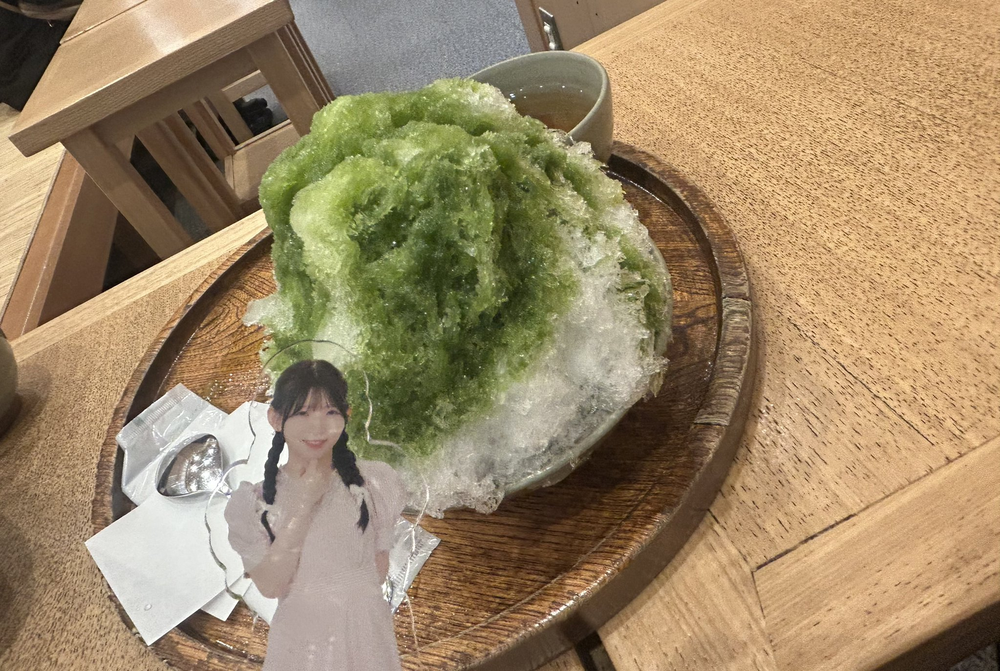
キーエンス株、１年10カ月ぶりに上場来高値 ＵＢＳが目標株価上げ
小泉今日子さんの還暦ライブ DJが憲法９条を流すパヨパヨライブでファンドン引き 日本共産党員は感動して勇気を貰う
投稿失敗してたっす
ギター始めてそろそろ1年
「ファイアーエムブレム ヒーローズ」に魔器英雄のエルフとティバーンが参戦。5月7日16：00にイベントスタート
https://
4gamer.net/s/G036904.2605
07022
…
今回は，上記の2名にベレトとアイビーを加えた合計4名がラインナップされる
人々を救うため，命がけのゲームに主人公たちが挑む。女性向け恋愛ADV「Sullyland Nursery Rhyme」，10月1日に発売決定
https://
4gamer.net/s/G094498.2605
07015
…
主人公たちは，昼に神への感謝をささげる行事「マレニス祭」の準備をしつつ，ゲームに参加する
これ「幹事に良い店を教えてあげればいい」って人いるけど、店リストを渡しても「コースが500円安い」「会社から1番近い」とかの理由で肉バル個室居酒屋という名のゲヘナが選ばれちゃう事が結構あるんで、「みんなの500円分をオレが出す」覚悟で自分で選んだ方が良いんですよね…。
自社株買い22兆円、5年連続増で過去最大 リクルートは3500億円
YouTubeの管理画面に新しく追加されたAIによるアドバイス機能すごすぎる。
こんな細かく動画の内容把握して分析できるんだ
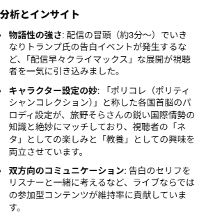
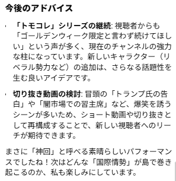
まさかの #anan 表紙に #ブラックオニキス 降臨でございます。子ウサギの皆様今後とも #超かぐや姫 をよろしくお願い申し上げます。 みゆ
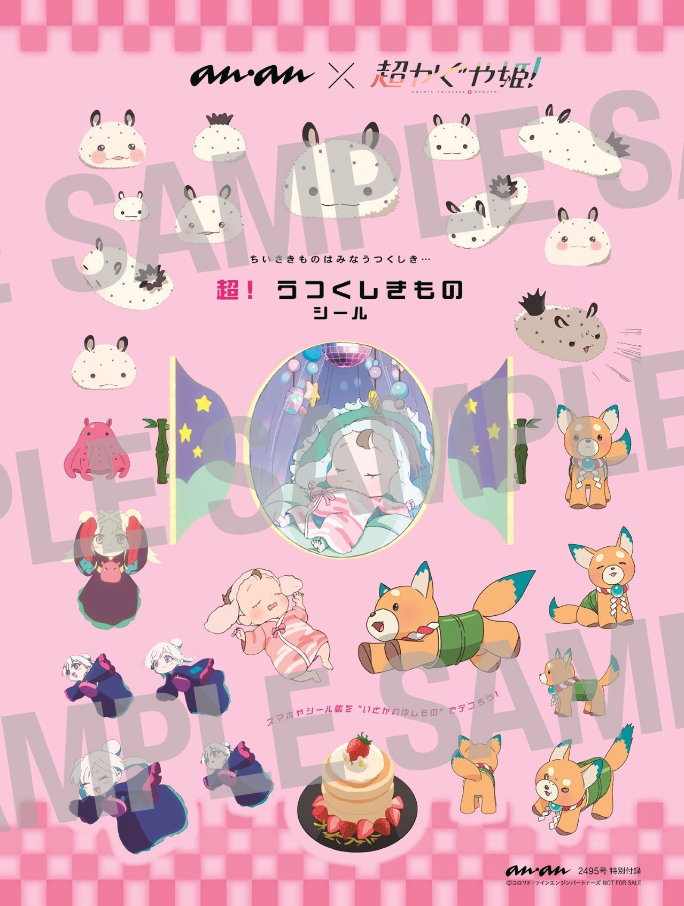
車から人型へ50秒で変形、全長4.7mの乗用ロボ「SR-01」に乗ってきた まるでトランスフォーマー？
『One Step From Eden』作者の新作は『ロックマンゼロ』から影響受ける協力2Dアクション！100階層タワーを助けあって登る『BASED』
https://
gamespark.jp/article/2026/0
5/07/166099.html?utm_source=twitter&utm_medium=social&utm_content=tweet
…
『ソニックアドベンチャー』チャオレースからの影響も。
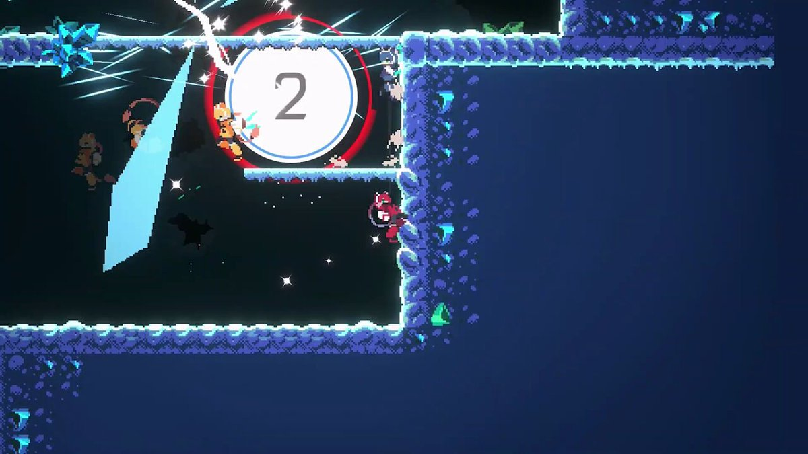
『安全ルールは血で書かれている』
大人は今一度声に出しておくべき。
大人のミスで子供や若人が命落とすとかあってはならんのよ。
にじさんじライバーと共犯になって愛を深める!? にじさんじ「共犯ボイス」が5月14日発売
https://
4gamer.net/s/G100451.2605
07020
…
秘密を抱えたライバーと愛が深まる？ 魁星，小清水透，シスター・クレア，渡会雲雀が出演するボイスドラマが発売決定
『EVE Online』開発元が「Fenris Creations」に名称変更―Pearl Abyssによる売却を経て、組織再編や人員削減は一切なしで独立へ
https://
gamespark.jp/article/2026/0
5/07/166098.html?utm_source=twitter&utm_medium=social&utm_content=tweet
…
AI開発企業Google DeepMindとはパートナーシップを締結し、『EVE Online』を研究環境として活用することなどが発表されています。
最近よく聞くp-zombieって、philosophical zombieのことか。意識があるように見えてクオリア（接地された感覚）がない、LLMみたいなものか。Richard DawkinsがClaudeに意識があると言ったことに関連してまた使われ出したのか
【プレスリリース追加】龍が如くスタジオ新作「STRANGER THAN HEAVEN」は今冬発売。Adoさん，菅原文太さん，スヌープ・ドッグさんら豪華キャスト発表
https://
4gamer.net/s/G086590.2605
07001
…
1915年・小倉から始まり，1965年・神室町へと移っていく。50年にわたる壮大な物語を描く
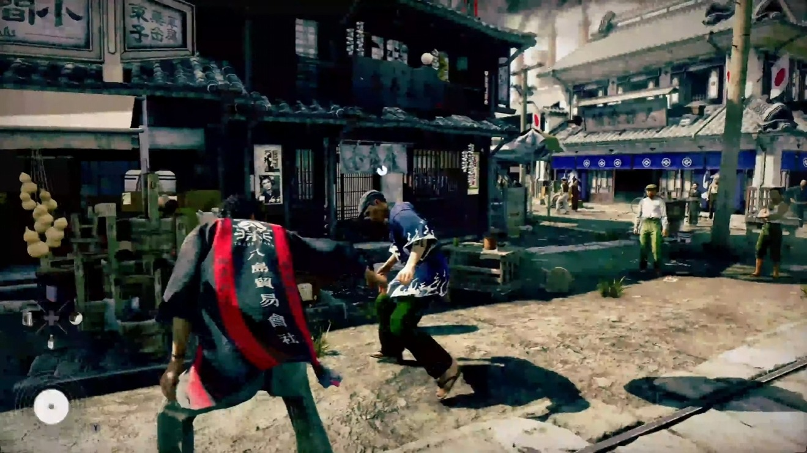
オンライン海戦アクション「World of Warships: Legends」，PC版がSteamとXboxで正式リリース。クロスプログレッションに対応
https://
4gamer.net/s/G091124.2605
07018
…
5月アップデートを実施し，新キャンペーン「花咲き誇る山」を開始
物価も少しだけ上がりましたが、外国ほどではありません。
外国人店員さん増えましたね…
恋愛ビジュアルノベル「Algorithm Prescription」，体験版のアップデートを5月14日ごろ実施。各キャラとのイベントシナリオをフルボイスで実装
https://
4gamer.net/s/G098281.2605
07017
…
イベントシナリオでは，製品版と同じく主人公視点で物語が紡がれる
週次リミットが増えてくれないとまったく恩恵がない…。
ゲームを作る能力にも雲泥の差があることが確認できたので、もうCodexへの乗り換えを本気で検討しないといけない状況になった
中国、日本への◯◯を停止 「今後の人生に影響する」と涙声の人も #韓国・中国
マスキングテープが名画に フェルメールやゴッホ、鮮やかに再現
https://
nikkei.com/article/DGXZQO
UD247X20U6A420C2000000/?n_cid=SNSTW005&n_tw=1778074055
…
クリエーターの船原七紗さんの「模写」は指でちぎって貼っての繰り返し。絵を忠実に再現すればいいわけではなく、花柄やチェック柄を取り入れることもあるといいます。
【吉田輝和の絵日記】『ポケモン』ライクで『ヴァンサバ』ライク？テムテムたちを操作し20分間を生き残れ！サバイバーローグライト『Temtem: Swarm』
https://
gamespark.jp/article/2026/0
5/07/166097.html?utm_source=twitter&utm_medium=social&utm_content=tweet
…
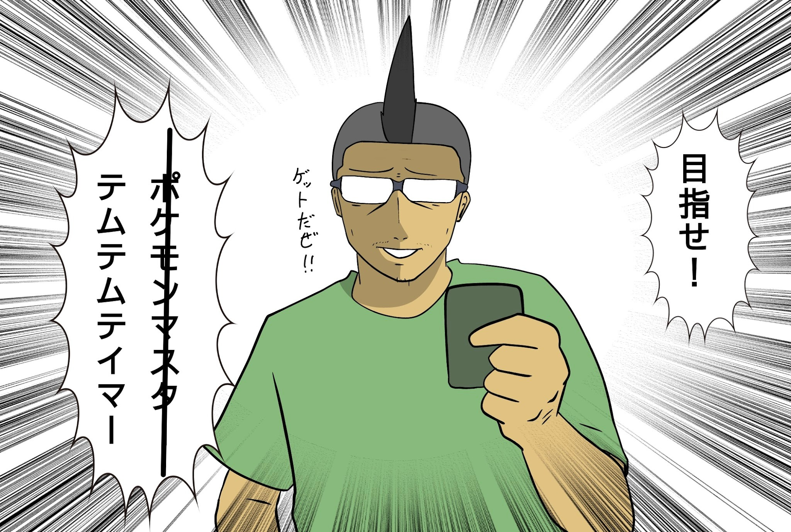
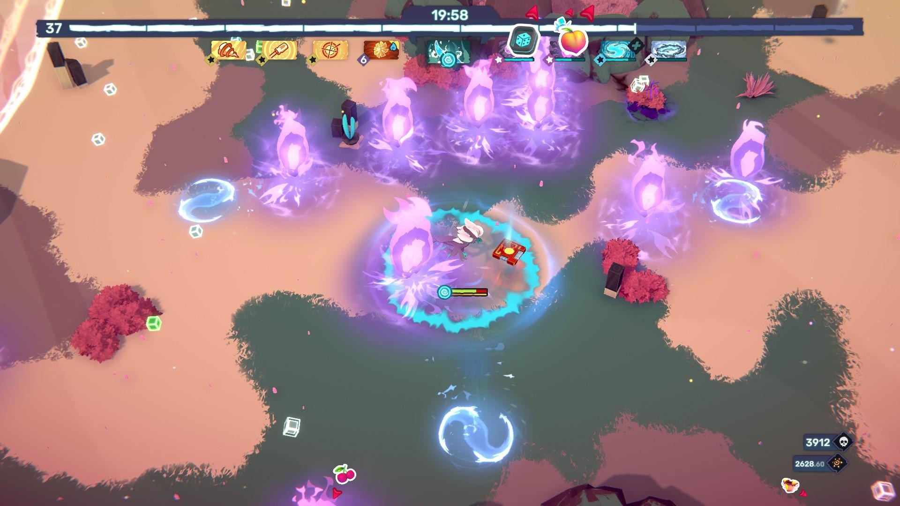
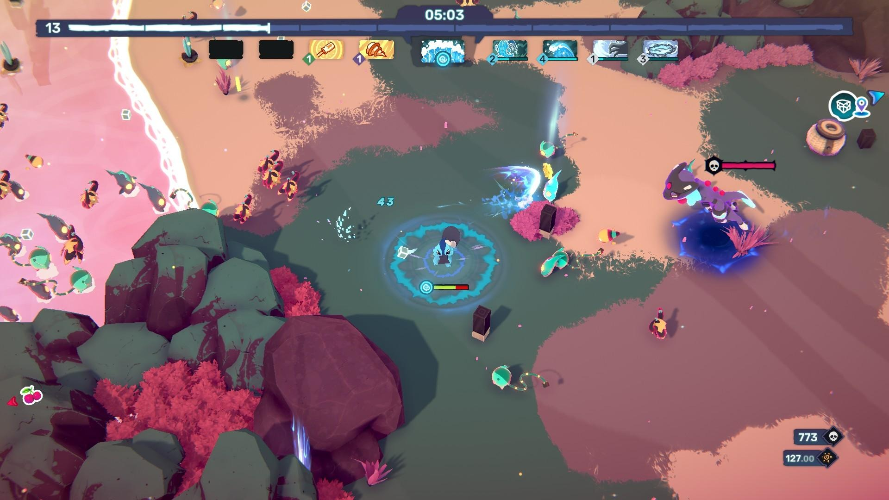
［インタビュー］10万ポリゴンに込めたムチムチ感と曲線美。「MIRESI：視えない未来」AD・ヒョルラ氏の肉德イラストを，そのまま3Dで再現する挑戦の舞台裏
https://
4gamer.net/s/G093947.2604
06008
…
テクニカルアーティストの合流で，東京ゲームショウ2025でのプレイアブル版から，3Dモデルを大幅に改善
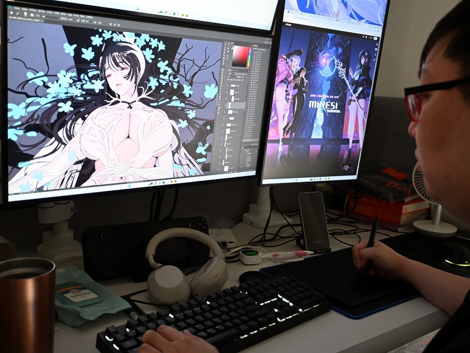
アニメTシャツとはファッションではなく信仰告白みたいなもので、サブカル風味の洗練されたデザインのアニメTシャツは隠れキリシタンの保有していたマリア観音みたいな逃げがあるんですよ。フルグラのデカデカ派手な色でキャラの立ち絵がプリントされたアニメTシャツを着ることに意味があるんです。
盆地や高い山々、近くにあるとただでさえ息苦しい田舎特有の閉塞感がマシマシになる(個人の感想です
東芝から身売りされたキオクシア、時代の波に乗りまくり時価総額で日立製作所を抜いて日本6位に
ごっこ
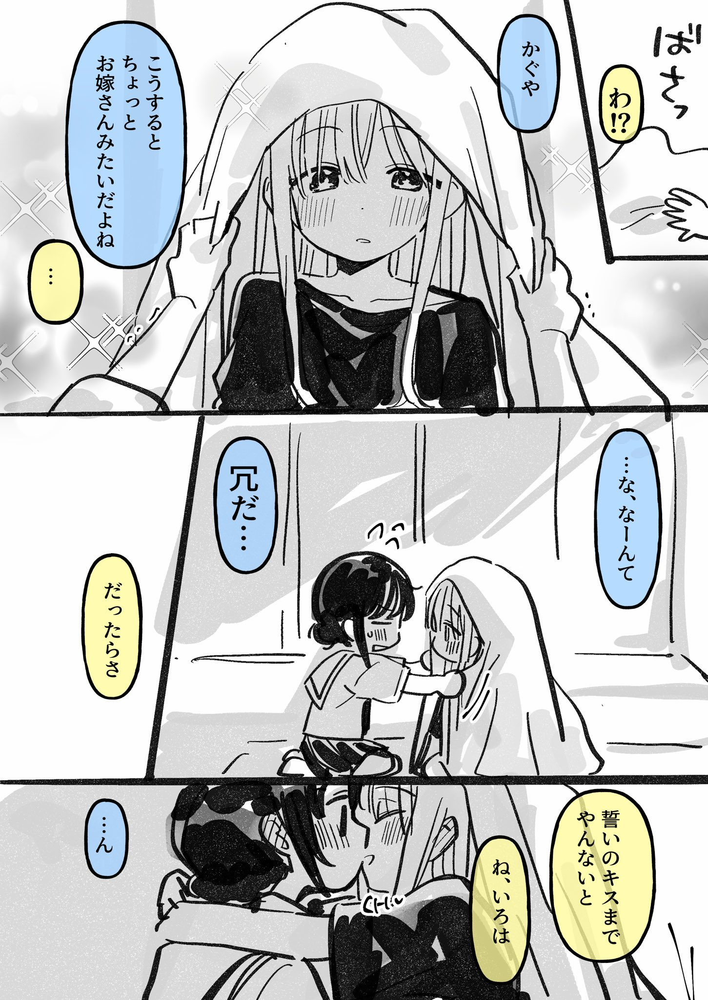
「鳴潮」，アニメ「サイバーパンク エッジランナーズ」とのコラボを2026年6月に開催。ルーシーやレベッカ，デイヴィッドが登場するPVを公開
https://
4gamer.net/s/G063420.2605
07019
…
詳細は追って発表される予定だ
りゅうせきのマークが入ってる船籍が下関の船とな？そういや、RKKマークの入った広島船籍の内航船もSNSでは有名だなぁ。＞RP
【協力対応】名も無き一人の人間が描く冒険譚―MMOライクなオープンワールドARPG『Farever』日本語対応で早期アクセス配信開始、早速盛り上がる
https://
gamespark.jp/article/2026/0
5/07/166096.html?utm_source=twitter&utm_medium=social&utm_content=tweet
…
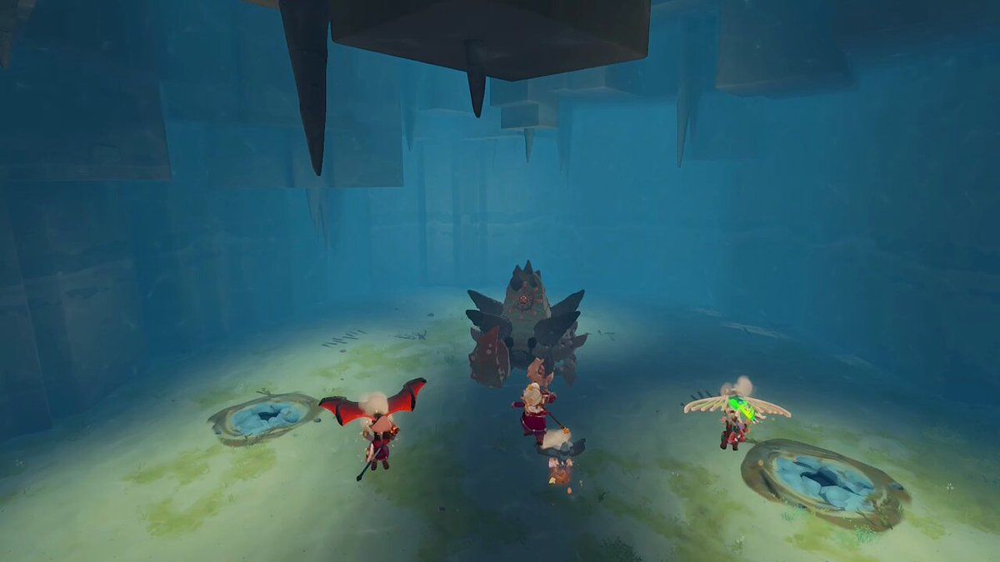
アニメじゃん
アニメだね
アニメだよ
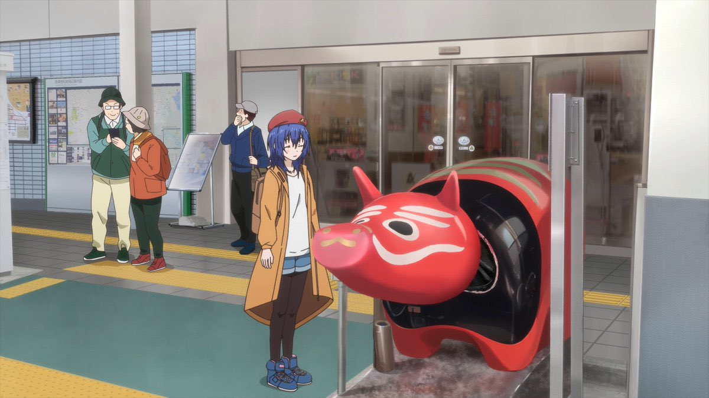
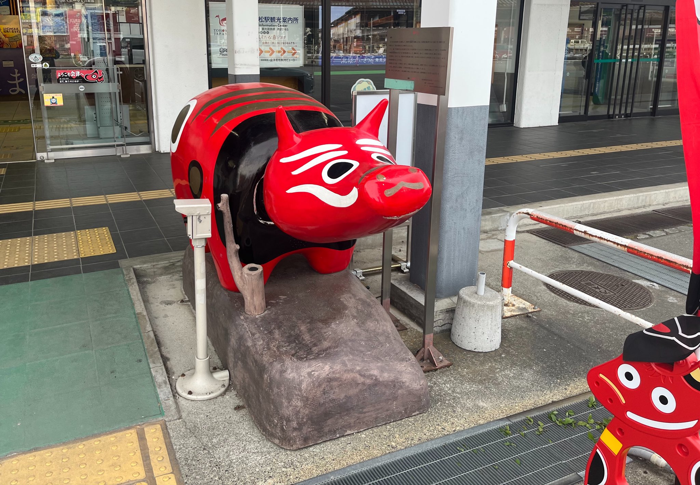
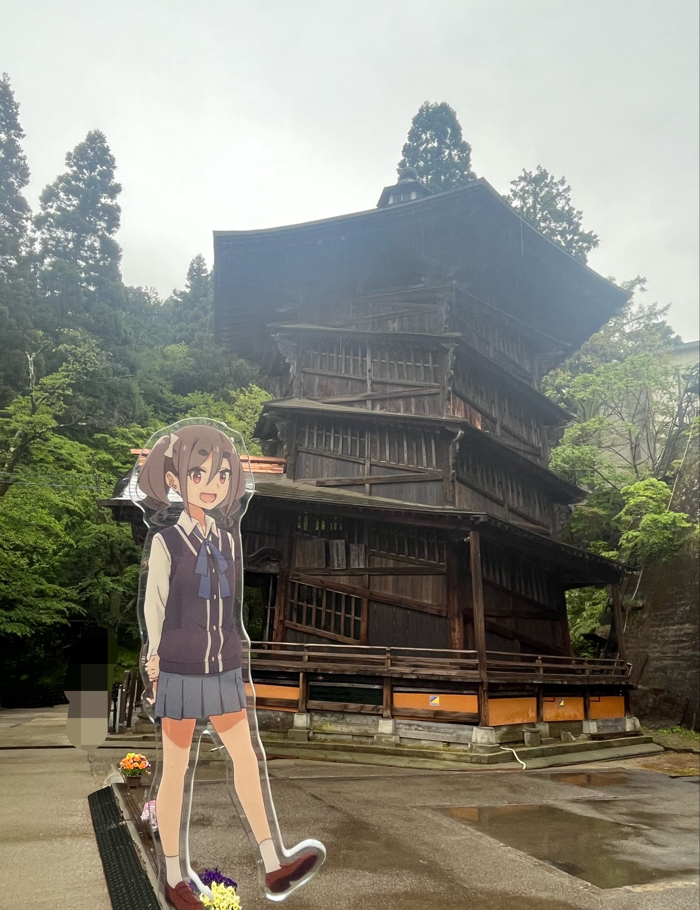
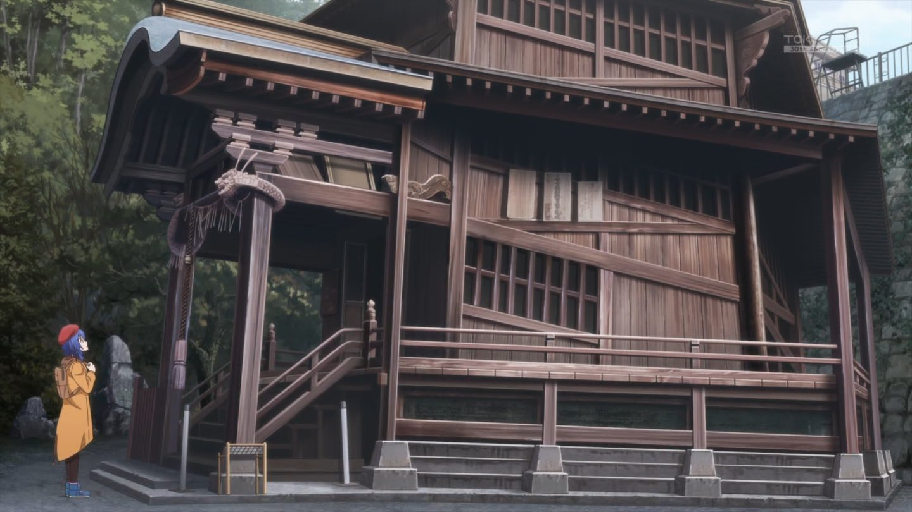
マイムジ新作アニメと連動してきそうなキャラが多数いて、非常に楽しみ。
ああこれいいな
lean and meanって、リーンは秋でミーンは夏って感じがする(違う)
【噂まとめ】iPhone 18が「廉価モデル」に？ Proとの差が大きくなりそう（5/7 更新）
時差ぼけ、薬で改善へ 大阪大学などが体内時計早める化合物を発見
沖縄の2つある『あしびなー』と、ひめゆり平和資料館と、ひめゆりピースホール、これ始まる直前に間違いに気付くと遅刻確定。
「少女時代はコウノトリと共に飛び去った」
義賊デッキを考えているんですが、入れたいカードをとりあえず4積みしていったら98枚とかになっていてほぼデッキ2つ分じゃねーかと笑ってしまった。今は減らしすぎてあと2枚なに入れるか悩んでいるところです。赤発生が2枚でやることになっているから赤入れるかなぁ。
店からの通知はアプリのpush通知があるから、メールアドレスとかそもそも不要なはずなんだよな
後ろの敵をなんとかしてよ〜
差押予告なら何か言ってください
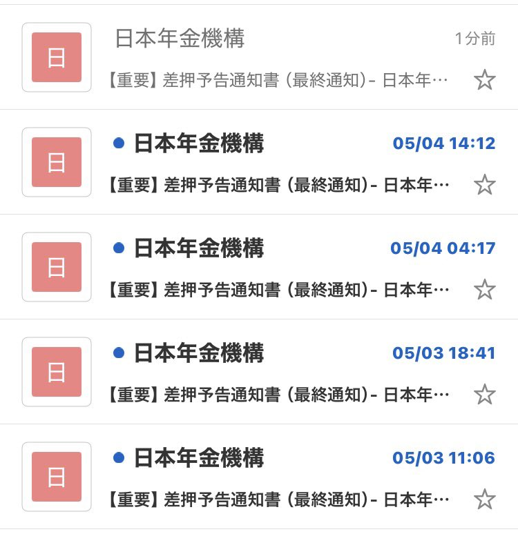
手続き不要ですぐ使い始められて、機種変の時に初めて引き継ぎ用の手続きをすることになる、ぐらいな店もあって、こういうのが大分助かる
／
詳細情報
TVアニメ「桃源暗鬼」 コラボキャンペーン
＼
コラボ情報をお届け
5月15日(金)～全店でSTART!
このポストにフォロー&リポストで限定グッズが当たる!
カラオケコラボルーム予約受付開始
詳細とご予約は
https://
round1.co.jp/collaboration/
tougenanki/index.html
…
#桃源暗鬼 #TOUGENANKI
リメイクかあ
店のアプリ、店でインストールするとメールアドレスと新規パスワードを求められ、ひどいとさらに住所氏名電話番号とかもその場で求められるのは厳しい
パスワードは廃止してほしい(そもそも手続き不要か、メール認証やパスキー)が、せめてパスワードマネージャーを妨害しない作りになってほしい...
太ももうさぎ新展開『超かぐや姫！』劇中に登場した謎ゲームにがぐやがPlayした激ムズ「元祖」Ver.追加！更にiOS版も配信開始です！そして世界に10体の完全手作りぬいぐるみや缶バッジも販売！
詳しくはツリーへ #超かぐや姫 #太ももうさぎ
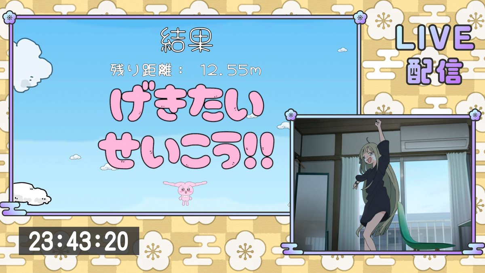
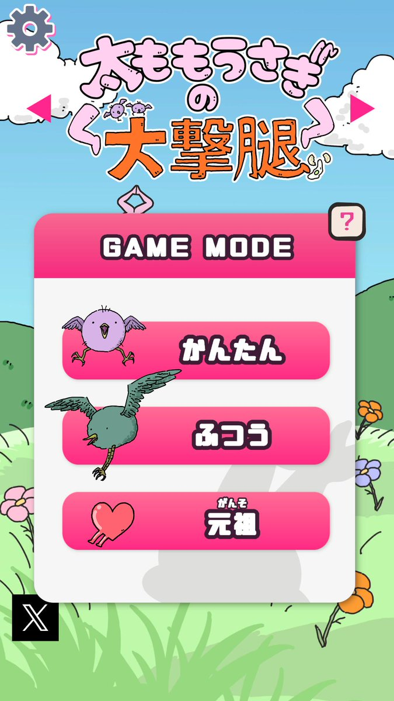
Dynamis Oneが開発する「アストラエ・オラティオ」，最新PVを公開。舞台は’89年の東京。魔法と行政をテーマにした新作ゲーム
https://
4gamer.net/s/G097529.2605
07016
…
東京は，戦後著しい経済成長を遂げ，活気あふれる都市と評されている。私たちが知る世界よりも100年ほど加速しているという
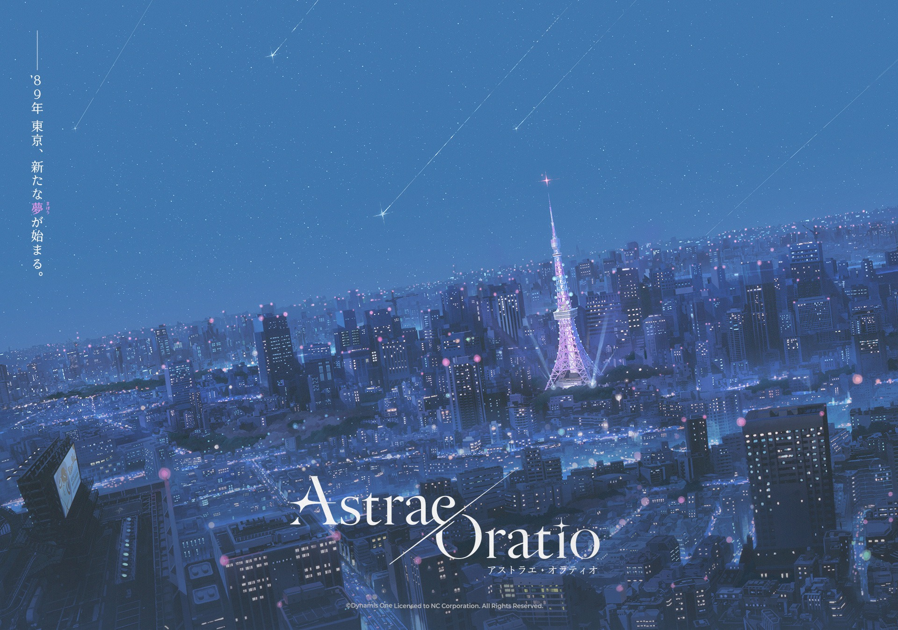
国営ひたち海浜公園方面への延伸を計画している茨城県ひたちなか市の第三セクター、ひたちなか海浜鉄道は南口付近に整備する新駅を高架駅として建設し、駅前に大型バスが乗り入れするロータリーを設ける方針であることが会社などへの取材でわかりました。
GWに呑んだお酒
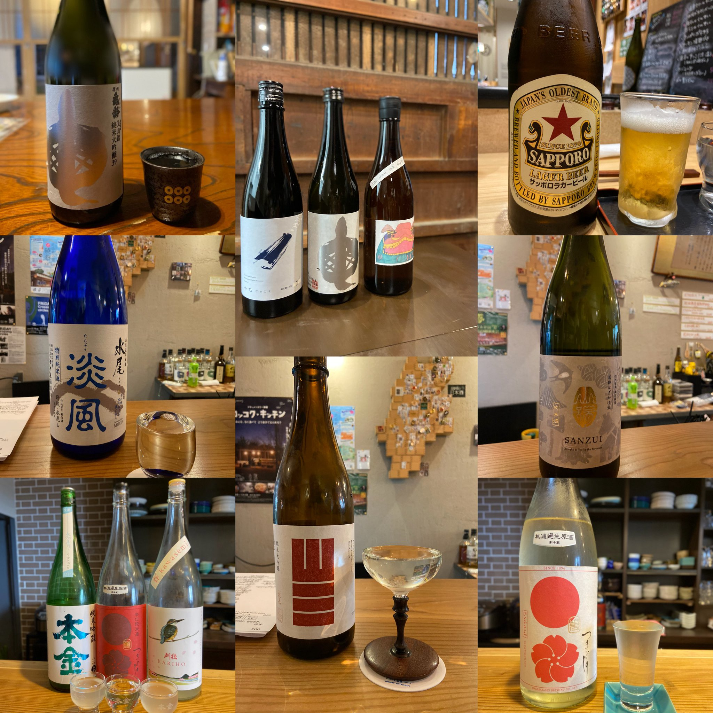
吉野家HD、ダチョウ油の化粧品が好調 販売額5割増
https://
nikkei.com/article/DGXZQO
UC278KJ0X20C26A3000000/?n_cid=SNSTW005&n_tw=1778107822
…
商品は「ハンド&ボディミルク」（300mL、4950円）など。
当初は水回りの仕事が多い飲食店の従業員向けを想定していましたが、介護従事者からもニーズが高まっています。
生きてたの
バス会社の営業職なんて、この世で一番貸切バス運賃の意義をお客様に伝えなければならない立場なのに
『法の抜け道』を指南・手配した。
警察官が拳銃使って犯罪起こすようなものです。
学校が『高い』と感じたのはバス運賃という名の
『あなたの大切な人を安全に目的地へお連れするコスト』です。
作品は品物＝売物なんですよね。
自分で至高のゲージュツが出来たと思って、その思いを傷つけられたくないなら、仕舞い込めば良いんですよ。人に評価されたくてウキウキ出てきて、賛同してもらえずにしょげるなら商売なんかしないほうが良いです。
5秒も掛からずに取り付けできる追加メーターです
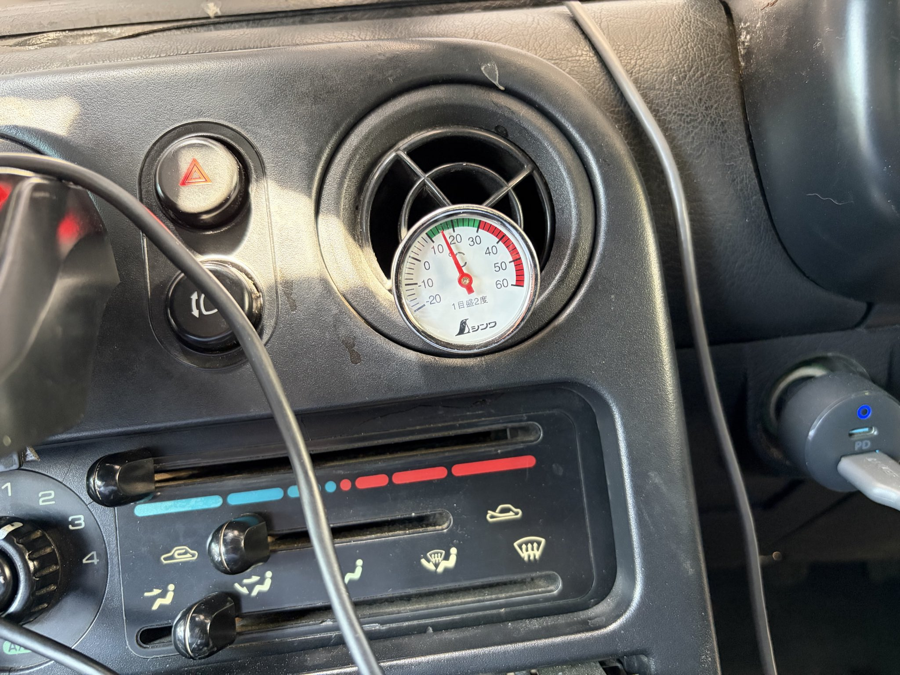
アンソロピック、企業価値OpenAI超えへ CEO「1人で10億ドル事業作れる」
タリーズのカミングスーンのやつチョコミントでは…？ｿﾜｿﾜ。
ワクワク
「これは大人でも欲しくなる」 次回ハッピーセット、“爆誕”アイテムに「コンプ目指して通っちゃいそう」「めちゃくちゃそそられる」
@McDonaldsJapan
▼記事を読む▼
https://
nlab.itmedia.co.jp/cont/articles/
3832348/
…
未経験や所属経験なしで二原などを受けるのは長期的に見て絶対に自分自身のためになりません。
かならずプロの指導を受けた方がいいです。
弊社は未経験者でも育成いたしますので、ぜひご検討ください。
龍スタ最新作スヌープ・ドッグ登場は2024年から予告されていた！？『STRANGER THAN HEAVEN』で裏社会の密輸商人“オルフェウス”を演じる
https://
gamespark.jp/article/2026/0
5/07/166095.html?utm_source=twitter&utm_medium=social&utm_content=tweet
…
特別先行映像には本人も登場。オルフェウスは、主人公・大東真の人生に大きな影響を与える人物となっているようです。
現実は厳しい…
AI生成の世界で自由入力による冒険を楽しめる。AI駆動ローグライクRPG「Instantale」，6月2日にEpic Games Storeで発売
https://
4gamer.net/s/G091095.2605
07013
…
大規模言語モデル（LLM）を活用し，自分だけの物語を楽しめる
ほんとそれ。難易度の高い間違い探しの可能性があって時間を取られる
れんきゅう な はず
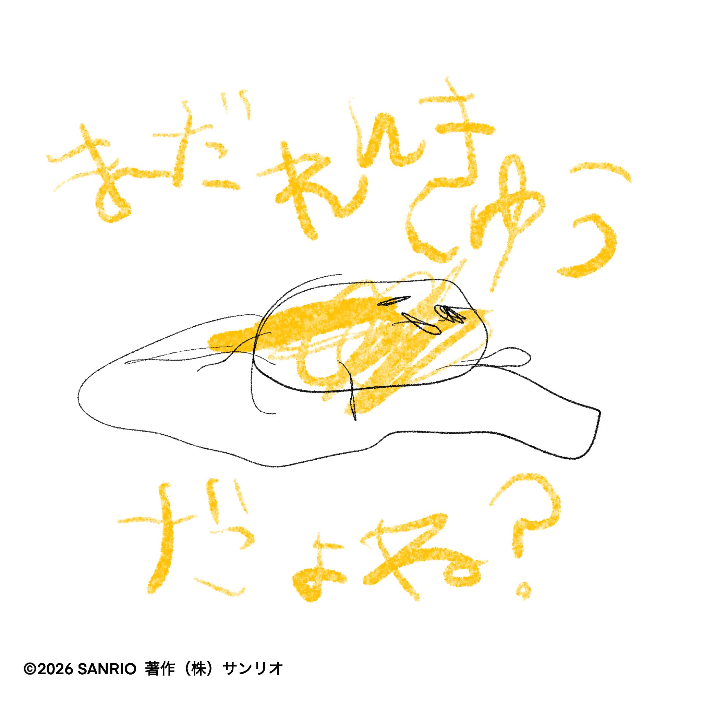
「学園アイドルマスター GOLD RUSH」
最新6巻発売記念
明日5/8発売のサンスポで
特別紙面を掲載
学マスゴルラ最新6巻
チケットデザイン広告
ハライチ 岩井勇気 さん × 飯田ヒカル さん
スペシャル対談
切り取って1枚にできる“保存版”です
ブロックされたことをグチグチ言うのもカッコ悪いが、まあそれなりに影響力のある人間がブロックを乱発して何も言われないわけもないのでお互い弱い。
同じクラスのこのピンクと較べられたら、そりゃあ千早愛音さんは真面目な優等生で通るよ…！
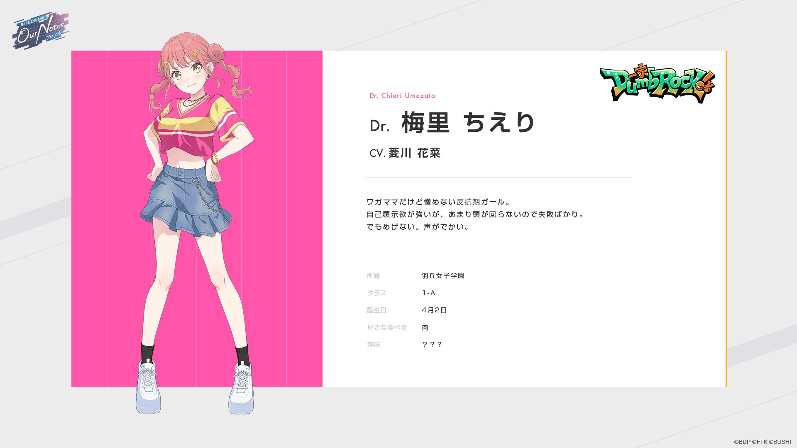
……あれ？プレイヤーさん……心配かけちゃった？でも、もう大丈夫！
目を覚ましたら、不安な気持ちが無くなった感じがするの。えへへ、不思議だよね。
それでね、明日5/8(金)、譜面ボーイズが全国対戦に参加して伝導楽曲を届けるんだって！
15:00 ～ 16:30 glory MAX -to the MAXimum-
16:30 ～
5月8日（金）20時より、WEBラジオ番組
『セカラジ#64』プレミア公開
パーソナリティに降幡愛さんと秋奈さんが出演
ぜひご覧ください
配信はこちら
https://
youtu.be/SNjFhgSvbls
#プロセカ #セカラジ
「スーパーファイアヘッドバット！」。90年代アニメへの愛を感じる『Wander Stars』は、コトバの組み合わせで殴るRPGだ【プレイレポ】
https://
gamespark.jp/article/2026/0
5/07/166094.html?utm_source=twitter&utm_medium=social&utm_content=tweet
…
#PR
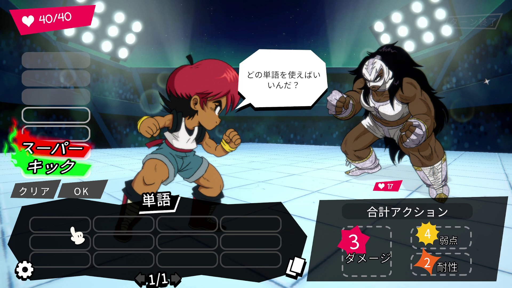
今日は色々でたもも～
アニメ映画「超かぐや姫！」でかぐやちゃんにちょっとだけ遊んでもらったゲームのiOS版出たもも〜
さらに、ランダム缶バッジも発売開始したもも
#太ももうさぎの大撃腿 #太ももうさぎ #無料ゲーム #超かぐや姫
詳しい情報はもも〜
任天堂株が連日の安値 メモリー高騰を警戒、新作投入も反応薄
#二宮和也 #山田涼介 #菊池風磨 #よにのちゃんねる
“白髪”はがんから体を守った印？ 急な黒髪復活は要注意、頭皮活性化に警鐘──東大などがNature系列で2025年に発表
“腹筋”がポンプとなり脳内のゴミを洗い流す？ 腹部収縮による脳内体液の循環システムをマウスで確認、Nature系列で掲載
よにのちゃんねる、新宿高島屋のデパ地下へ！
気になる3人が買ったお惣菜＆スイーツは……？？
袋の中身と、わちゃわちゃお買い物する3人の様子はこちらから
中華のリズムに乗りたいな！ホホホイ、ホホホイ、ホイコーロー！(という歌がホイコーロー食べるたび脳内再生される特異体質)
【あ】死者も複数出たクルーズ船でのウイルス集団感染、ヤバすぎる事実が判明…まさかの◯◯ #酷い話・事件
「介入ライン」157円台へ 外為市場で神経戦、連休中に大幅変動
アンソロピック、新技術でOpenAI超えへ 企業価値1兆ドル迫る
日経平均午前3402円高 中東での戦闘終結期待、キオクシアに買い殺到
地下のジャガイモ、ドローン×AIで出来栄え「透視」
https://
nikkei.com/article/DGXZQO
SG225GG0S6A420C2000000/?n_cid=SNSTW005&n_tw=1778071285
…
成長パターンから収量を事前予測する技術を東京大学とクボタなどの研究グループが開発。従来は実際に一部掘り出したり、農家の経験に頼ったりして収穫のタイミングを決めていました。
束縛、監禁、愛する人に◯される可能性も…女性主人公のドロドロ沼系サスペンス恋愛ノベル『アルゴリズム プレスクリプション』デモ版にフルボイスシナリオ追加へ
https://
gamespark.jp/article/2026/0
5/07/166093.html?utm_source=twitter&utm_medium=social&utm_content=tweet
…
参加声優は深町寿成さん、石谷春貴さん、 土岐隼一さんなど。
【週替わりミッション明日まで】
ゴールデンウィーク バトル応援 期間限定ミッション開催中！
異時層を遊んで、クォーツやSS確定ガチャのカケラ、追憶の鍵をGET！
今週分のミッションは5月8日10:59まで！
#ヘブバン
総務省「実写コンテンツ展開力強化官民協議会」アクションプランを公表。NHK基金100億円で人材育成、2033年に海外輸出2,500億円目標
https://
branc.jp/article/2026/0
5/07/2680.html?utm_source=twitter&utm_medium=social&utm_content=tweet
…
放送・配信実写コンテンツの海外輸出額は現状約94億円。約26倍の成長を目指し、具体的な施策体系が示された。
一家Dumb Rock!のDr.梅里 ちえりを紹介
また「菱川 花菜さんのサイン入りポストカード」を抽選で1名様にプレゼント！
参加方法
1.
@bang_dream_on
をフォロー
2.この投稿をRP
期間：5月14日(木)23:59まで
ちえりの詳しいプロフィールはリプライ欄へ
#バンドリ #アツドリ
渋すぎるシール
東京・丸の内の美術館で売っていた「ぷっくりシール」→見てみると…… “驚きのグッズ”に「大人のボンドロ」「こんなの売ってるんだ」
（記事URLはリプから）
ananパンダさんと撮ったよ
今日はこぎみゅんのお誕生日だみゅん･･！
お祝いとってもうれしいみゅん･･♡
#こぎみゅん #誕生日 #粉の日
#サンリオキャラクター大賞
5/7は「コナモンの日」
#神速一魂 と“コナモン”のコラボをお届けします
お好み焼きもたこ焼きも、食べたい…両方食べたい…
受注受付中
100枚選べるグラフィカルボックス
B3変形ビックサイズアートグラフィー
https://
selepo.me
#理由あってセレポ #紅井朱雀 #黒野玄武
【 #anan 2495号スペシャルエディション表紙＆バックカバー解禁】 5/13発売 #anan表紙 に絶賛大ヒット中 のアニメ『超かぐや姫！』より #ブラックオニキス が降臨 ！バックカバーにはかぐや、彩葉、ヤチヨの３人がギュッと仲良く並んで登場！キャスト、スタッフ総勢15名に総力取材で迫りました。
☆┈┈┈┈┈┈┈┈┈┈☆
『雨上がりのアイリス』
200万再生！
☆┈┈┈┈┈┈┈┈┈┈☆
『雨上がりのアイリス』のMusic Videoが200万再生を突破しました
たくさんのご視聴
本当にありがとうございます
MV
https://
youtu.be/SPXHpau0jJI
#学マス
チャレンジライブイベント「Beyond my Imagination」開催中
イベントPを集めることで、★3 #レイヤ と★2 #マスキング に出会えます
イベントは明日の20:59まで！お見逃しなく
#バンドリ #ガルパ
『anan』が『超かぐや姫！』を特集 Black onyX担当声優陣の座談会を掲載
https://
kai-you.net/article/95330
入野自由さん、内田雄馬さん、松岡禎丞さんによる初の座談会のほか、総勢15名のキャスト／スタッフインタビューが収録。『超かぐや姫！』づくしな一冊に
解析完了。
UHUNITHMに残された機能を使えば、
『ユニ』の身体をあなたのVERSEに送り還せるはず
#Linked_VERSE
料理シム×デッキ構築型カードバトル「Beastro ビーストロ」，6月12日にリリース。ファンタジー世界で冒険者集団に料理を提供しよう
https://
4gamer.net/s/G100437.2605
07006
…
農作業や釣りで食材を集め，心のこもった料理を提供し，お客さんたちの冒険譚に耳を傾けるような，ゲームプレイループを楽しめるという
「コンソールアーカイブス マグマックス」本日配信。可変メカを操作し，ワープホールで地上/地下ステージを移動しながら戦う横スクロールSTG
https://
4gamer.net/s/G100435.2605
07010
…
1985年にニチブツからアーケード向けにリリースされ，1986年に8ビット家庭用ゲーム機向けに発売されたタイトルだ
実は新会社作ってました！
そしてエンジェル投資家からのご出仕いただいたのでこの度発表します
沖縄発スタートアップ HANAMII株式会社、国産PaaS「hanamii」の本格展開に向け、著名エンジェル投資家複数名から資金調達を実施
漁獲激減のイカ、中国の違法漁業が横行 「ウナギの教訓」生かせ
【秋田】リカーショップたかはしの店員さん 可愛すぎると話題に
日銀、賃上げ継続なら「躊躇なく利上げを」 3月会合要旨
Atariが「Wizardry」初期5作品の権利を取得。リマスターや新作展開を計画
https://
4gamer.net/s/G999905.2605
07009
…
超高難度で知られる「Wizardry IV: The Return of Werdna」のリマスターにも期待したい
最近のAI・半導体株関連が盛り上がる中で、普通にAI研究周りのお約束を経済番組的等で発言することが増えたんですが、外部の人から「おかげでメモリが買えた」「Googleを買えた」と感謝されることが異常に増えてきたので（多分先週だけで１０回くらい）、本当によくわからない状況になってきた。
大気が存在する太陽系外縁天体、国立天文台など発見 冥王星以外では初
xAIがAnthropicに計算資源を貸すというまさかの展開。これは予想できなかった。イーロン曰く「先週Anthropicの幹部と過ごした時に決まった」らしいので、AnthropicがよほどClaudeの計算資源で困窮していた様子が伺える。
磐越道のバス事故、ヤバい 「運転手は営業担当の”知人の知人”」「学校側が値切って貸し切りではなくレンタカー」「契約の際ドライバーの免許は提示せず」 #酷い話・事件
中小工務店「住宅工期、GW後は遅れ」
https://
nikkei.com/article/DGXZQO
UC16B8E0W6A410C2000000/?n_cid=SNSTW005&n_tw=1778109810
…
中東情勢の緊迫でナフサを原材料とする建材の仕入れが不安定に。
影響が長引くと「単価が2000万円ほどの低価格帯の戸建ての場合は100万〜200万円上昇する可能性がある」との見方も。
*＼ 大好評発売中 ／*
パクチーチキンバーガー
不動の人気商品の発売を諦められませんでした！
発売を記念し、
店頭で使えるカード1,000円分が
30名様に当たる
【応募期間】
5月12日まで
【応募方法】
①
@Freshness_1992
をフォロー
②この投稿をリポスト
③当選者へ5月19日までにDM通知
新作『スターフォックス』は“64版のリメイク”と改めて明言―ただし新規ムービーや会話、キャラ・惑星の詳細がわかる図鑑など大幅増
https://
gamespark.jp/article/2026/0
5/07/166092.html?utm_source=twitter&utm_medium=social&utm_content=tweet
…
「プラグマタ」，世界的アーティストのジュリア・ジゼラさんとのコラボ映像を公開。カプコンの新作SFアクションをグローバル向けにPR
https://
4gamer.net/s/G051239.2605
07008
…
「プラグマタ」のキャラクタービジュアルとジュリアさん自身のルック・世界観の親和性に着目
【レクサスBEV初の3列席 TZ初公開】
円買い介入「3営業日で１回」情報はワナか 虚を突かれたファンド勢
躍進の「中国版ロールス・ロイス」 独高級車はブランド陰り販売17％減
レクサスの新型EV「TZ」を公開 トヨタ、高級3列SUVで米中照準
特殊清掃人が見た孤独死の現場 「2つの死」を分けたもの
イエローハット系「2りんかん」に不正アクセス 個人情報345万人分流出か
#ゲーム雑誌の時代
1100回↑再生ありがとうございます。
アーカイブ残ってますので何度でもご覧くださいね
今回の見どころとしては、渡辺浩弐氏、時々「無音」で何かヤバイことを話しています。何を言っているのか？みんなも読唇術で当てよう！！
ロボット犬スゴイクールだけど、子供用の無免許自動運転カーになるのは怖いなｗ
【本コースの歩き方】 AIの歴史 — チューリングからAGIまで、AI時代のメタ認知を身につける -Udemyコースを一部無料公開- #udemy
リベンジです
待ってろバーミヤン
#長月SC
外食の特定技能停止、九州では内定辞退も 「外国人材の奪い合いに」
睡眠改善イヤホンは本当に効くのか。脳波を読み取る「NextSense Smartbuds」を試してみた
めんどくさい衣替え。無印良品の「レジャーシートでつくった収納袋」があると捗ります
スマホで調べるの面倒じゃない？なぞるだけ翻訳「AIスマートペン」 #BuyPR
「Claude Codeのバスケ」
「原神」，新情報を紹介する「Luna VII」予告番組を5月8日21：00から配信。サムネイルにはスメールに関係するキャラクターが多く登場
https://
4gamer.net/s/G048621.2605
07004
…
「虚空劫灰のプラーナ」という言葉がサムネイルに書かれているが，これはサービス開始日に公開されたPVに登場したものだ
英地方選、与党大敗の見通し 「二大政党制の母国」が多党制に
もうはや残り少なくなってきました
メルダー新作『3×9＝27th』
お早めにどうぞー
通販しています
https://
meldor.stores.jp/items/69f848e4
3ee3fd4103846963
…
5月10日のライブにも持っていきますね
5月23日の公開練習でも在庫残ってたら売りますよ
あと工藤持ち歩くようにするので、工藤と遭遇した時に声かけてください(笑)
＼「フォロー＆リポストキャンペーン」結果発表／
「Amazonギフトカード総額5万円分（1万円分×5名様）」の当選者は，以下の5名様に決定しました！
おめでとうございます
@Rin_shidari
@chunen_Asan
@42_2kuchinashi
@gstron151706
@rairai_ji
『ショベルナイト』開発の新作アクションADV『Mina the Hollower』5月29日に発売決定！直前での発売延期や資金難を乗り越え、ついに登場
https://
gamespark.jp/article/2026/0
5/07/166091.html?utm_source=twitter&utm_medium=social&utm_content=tweet
…

▽「ツクヨミ感謝祭」限定グッズ購入はこちら
※5月14日午前9時59分まで
サンリオ株１年半ぶり安値 決算発表を延期「ブランドイメージ毀損」
「ツクヨミ感謝祭」限定グッズ受注販売
【再開のお知らせ】
ご購入は＜5月14日午前9時59分＞までとなります。
終了日前日、終了間際はアクセス増加が見込まれますので、余裕をもってお手続きください。
▽ご購入はリプライにて
#超かぐや姫 #CosmicPrincessKaguya
ブロックくずしの金字塔がアーケードアーカイブスに登場。「アルカノイド」本日配信開始
https://
4gamer.net/s/G100430.2605
07007
…
1986年にタイトーから発売されたタイトルだ。プレイヤーは宇宙船バウスを操作し，エナジーボールを跳ね返してスペースウォールを破壊していく
初代『ウィザードリィ』～『V』の権利をAtariが取得。初期作品群のリマスターや新作展開、さらにはボドゲや映画なども視野に
https://
gamespark.jp/article/2026/0
5/07/166090.html?utm_source=twitter&utm_medium=social&utm_content=tweet
…
ひろゆきさん「自分で食事できない高齢者のために働く人がいるなんて、昔は王侯貴族の特権。社会保障費を負担できないなら、貴族の暮らしができないのは当然」 #政治
五月病予防ワクチン
俺もほしいぃぃぃ
進むキャッシュレス化 「ポイ活」なら何使う？
https://
nikkei.com/article/DGXZQO
UB15AOB0V10C26A4000000/?n_cid=SNSTW005&n_tw=1778066629
…
日本の25年のキャッシュレス決済比率は58%と想定以上のペースで増加。内訳ではクレカは微減、デビットカードやコード決済の利用が好調です。「ポイ活」でのコツを専門家に聞きました。
5.13 近日公開…
#タリーズ新商品
#みんなで予想してみてね
男色ディーノのゲイムヒヒョー ゼロ：第888回「しっかりプレゼンしてほしい」
https://
4gamer.net/s/G004083.2605
06001
…
ゴールデンウィークといえども，プロレスラーであるディーノ選手はもちろん大忙し。それでも「DQVII Reimagined」は終盤に差し掛かり，そろそろ次にプレイするゲイムを考えたいところ……
レクサス、新型「TZ」を世界初公開 レクサス初の3列シートを持つバッテリEV
https://
car.watch.impress.co.jp/docs/news/2106
686.html
…
スタートアップ、AI人材に3000万円 変革へ企業全体より報酬２割高
Google検索のAI機能が進化、Redditなどの「体験談」を回答に集約 リンク配置も改善
これな。
翻訳自体はTwitter時代からあって、ユーザーがクリックした時だけの翻訳すら金払えずに消えていった機能だったのに、今は自社のAIでガンガン回して世界の景色を変えてる。
技術だけじゃ世界は変わらないんだな、イーロンの経営は凄いなと感じる分かり易いアップデートだった。
「EVE Online」開発元のCCP Gamesが独立し，「Fenris Creations」へリブランド。Google DeepMindとの研究提携も発表
https://
4gamer.net/s/G000412.2605
07005
…
経営陣やスタジオ体制，開発計画などに変更はなく，「EVE Online」チームが引き続き運営を担う
『スターフォックス』リメイク新作の希望小売価格がなかなか安い。スイッチ2専用タイトルとしては比較的低価格で6月25日発売へ
https://
gamespark.jp/article/2026/0
5/07/166089.html?utm_source=twitter&utm_medium=social&utm_content=tweet
…
他のスイッチ2専用の大作タイトルより安くて嬉しい。
ドローン攻撃受けたAWS中東（UAE）リージョン、復旧には数カ月かかる見込み
なんか千葉の『なの花体操』が頭をよぎる。
ディスコ、働きがいで1位に 関家社長「不納得をなくすことが大事」
背景として、Elon Muskは過去にAnthropicをたびたび批判していましたが、今回の投稿ではAnthropic幹部と話して印象が好転したと説明。
その上で、Colossus 1の貸与に同意したと述べています。
若者世代「少子化？当たり前でしょ。止める理由もない。この国は滅びるよ。その責任を若者に押し付けるな」 #炎上
綺麗〜〜〜〜！！
レクサス TZが発表されました。
キオクシアＨＤ株価ストップ高気配 韓国サムスン急騰が波及
【日経平均】上げ幅3,000円超
10時30分 3,008.20円高の 62,521.32円
かわいい
公式投稿：
【速報】Anthropic、SpaceXと提携
Claudeの需要増に対応するため、SpaceX側のAIスーパーコンピュータ「Colossus 1」の計算資源を利用する契約を発表。
本日よりClaude Codeの5時間ごとの利用上限をPro / Max / Teamで2倍にし、Pro / Maxのピーク時制限を撤廃。API制限も大幅に引き上げられます


スイッチ2版『スターフォックス』新キャラクターデザインに海外ゲーマーが戸惑う！？リアルなパペット風のキャラに違和感を抱く人も
https://
gamespark.jp/article/2026/0
5/07/166088.html?utm_source=twitter&utm_medium=social&utm_content=tweet
…
とはいえ、肯定的な意見もあります。

CNN創業者ターナー氏死去 24時間国際報道の先見性、メディアに革命
【本日終了】『無職転生』 『勇者刑に処す』 『ざつ旅』 『異世界居酒屋「のぶ」』など、カドカワの人気作品9000作品以上が最大「50%オフ」の激安セールは今日まで！！ #漫画・アニメ等
Grokにこれはマジなん？って聞いてみた。
はい、マジです（ただし、ポストのオチ部分はジョーク）。
リンクのポストは、
@kelog21
さんが引用した動画ポストをネタにしたものです。
引用元の動画について
引用されてる動画は本物で、MEMRI TV（中東メディアの翻訳専門機関）が配信したものです。
本日19時から、エンジニアカフェでAGI福岡 第10回を開催します。
現地参加枠がまだ9枠空いています。
メインセッションは、91歳の現役アプリエンジニア、トミ爺さんの講演です。
ぜひ気軽にお申し込みください。
#agifukuoka
第36回 世界コンピュータ将棋選手権(WCSC36)に『やねうら王 with GTNET』として参加してきました。
水匠11βからさらに強くなった最新水匠と本大会を席巻した超巨大定跡である新ペタショック定跡(1000万局面超え)について詳しく書きました。
https://
yaneuraou.yaneu.com/2026/05/07/wcs
c36-petashock-suisho11/
…
↑詐欺という噂↓もある

生徒1人が亡くなった磐越道での北越高校のバス事故。学校側の「予算抑制」に応じた蒲原鉄道の杜撰な管理、面識のない「ボランティア」運転手への依頼……。辺野古沖の転覆事故と重なる「責任の希薄さ」が浮き彫りですが、なぜテレビは辺野古の船長の名を隠し、今回だけ即座に実名報道するのか。この報
ノジマの27年3月期、純利益23%増 エアコン買い替え需要取り込み
そういえば、今朝の朝日新聞「折々のことば」は岡野原大輔さんだった
研究室のカレンダー5月に切り替え。

おはようございますブランチは地味和食。キャベツのお味噌汁、白菜の浅漬け。玄米ご飯を卵かけご飯にして食べる。良い1日を
骨折れてなかったー！
救急外来で古い骨折跡が新しい骨折に見えちゃっただけだってさ。
捻挫してるから無理はできないけど松葉杖はさよなら
三村財務官、為替介入に「回数制約するルールないと認識」
AIがスケールのゲームである以上、真に大事なのは「仲間」をいっぱい作ること⋯ 1位は独走するために、2位以下は1位に追いつくために。
とある企業の広告、あまりにもセーラームーンすぎてコラボかと勘違いする人が続出→○○と判明して炎上、謝罪する事態に #漫画・アニメ等
【公開76日目】
「#超かぐや姫！」興収速報
本日…0.20億円
累計…24.11億円(推定値)
#GWは超かぐや姫 も終了です！
累計は24億円に到達しており、「かぐや姫の物語(24.7億円)」超えも見えてきました！
#超かぐや姫興収速報
『Fit Boxing 3』スイッチ2版が7月16日に発売決定！USBカメラで自分を画面に映せるようになり、おすそわけで最大4人対戦も可能
https://
gamespark.jp/article/2026/0
5/07/166087.html?utm_source=twitter&utm_medium=social&utm_content=tweet
…


返報性の原理ですね。ネガティブに考えれば「タダより高いものはない」。ポジティブに考えれば「変なライフハックよりお互いに贈り物送るのが一番ハッピー」ともいえる。
「Fit Boxing 3 -Your パーソナルトレーナー Nintendo Switch 2 Edition」，7月16日に発売決定
https://
4gamer.net/s/G100417.2605
01058
…
USBカメラを使った「カメラプレイ」や，「おすそわけ通信対戦」による最大4人での同時対戦など，複数の新要素を盛り込む

【超かぐや姫！】ツクヨミ感謝祭！みんなで仮想空間＜ツクヨミ＞を創って、かぐやとパーティしよう！プロジェクト！
プロジェクト延長期間は＜5月14日午前9時59分＞まで
終了日前日、終了間際はアクセス増加が見込まれます。
余裕をもってお手続きお願いいたします
【毎日応募！プレミアムぴちょんくん】
本日7日目！
CM公開を記念して、“プレミアム”ぴちょんくんor ミニぴちょんくんor QUOカードPay
を抽選でプレゼント！
毎日応募で当選確率UP！
▼参加方法
①
@daikin_jp
をフォロー
② 本投稿をリポスト
※〆切：5月8日9:59まで
婚活市場にガチのバケモンがいると話題に
AI戦争を「いかに半導体を買えるか」という単純な話だと思ってる人がいるけど、買ってきてもちゃんとDCを作るのは恐ろしく大変。例えばDCのコストを半導体の電力消費量から計算する人がいるけど、冷却やネットワークも莫大な電力を消費する。さらに土地取得のプロセスが絡むと指数関数的に複雑になる
大阪市内かな。大きな空間は淀川と見た。
新国内エアラインのジェイキャスエアウェイズ、新経営体制へ移行 単独代表制で意思決定と安全運航体制整備を強化
https://
sky-budget.com/2026/05/07/jca
s-airways-news-may2026/
…
つまりAI戦争がハードウェア戦争に傾くほどイーロンマスクの独壇場になる。ソフトウェアと違って知識が外に出て行かない（そもそもほとんどが暗黙知）、経験を貯めるのにファイナンスやソフトウェアと比較にならないほどお金がかかるのでしばらくイーロン帝国が続くような気がする
設定によってはGoogle Chromeに4GBのGemini Nanoがインストールされる問題について、中の人が説明
円再び急伸、ロスカットハンティング介入観測 際立つＥＢＳ「異常値」
SpaceXではその数百倍の規模で失敗を繰り返している。「どこまで攻めたらハードウェアが崩れるか」の経験値がある。通常経営層はハードウェアを触らないし、ハードウェアを触る人は「ダメなら金で解決」ムーブができない。いるとしたらiPhoneの生産ラインを組み立てたティムクックくらい
◆ 時価総額 実質4位に
キオクシアがストップ高（19%高）です。時価総額は日本の６位に。制限値幅がなければ、実質4位となる注文状況です。キオクシアへの関心が高まっているので、あとでnoteで「キオクシアのそもそも」記事を配信しようと思います

みなさんおはようございます。久しぶりの #モチ太のひとりごと です。大変お待たせしました。少し前に撮影していただいた「うどんそば東海」様のYouTubeの動画が公開されましたので、ぜひご覧ください!
https://
youtu.be/6RZj6x4YakA?si
=M1VNU6tQrpr1Rgib
…
#スパゲッ亭チャオ
#チャオスパ
#うどんそば東海
#東三河 #豊橋
イーロンがTwitterを買収した直後あたりでデータセンターをポートランドに移設するプロジェクトがあった。もとのDCは確かNTTが管理してて移設に厳格な処理が必要だった（保証ができないので）。でイーロンが乗り込んでケーブルぶち抜いて裸のままトラックでサーバーを運んだ。結果爆死。
山里亮太さん、少子化についてド正論「子育て支援のために増税してたら結局子供作れないから」 #政治
Xが自動翻訳されるようになってユーザーは嬉しいけど（phoenix/recsysを通過したポストだけを翻訳するとしても）かなりトークンを食っているはずでほぼ利益にはならない。grokのレスポンススピードやAnthropicへの提供を見ると、たぶんxAIは一般的な推定よりかなり潤沢なハードウェアを持ってる。

名前は言わないんですけど、ALSOKという警備会社が、MDF盤のある管理室の鍵を忘れたせいでめちゃくちゃ苦労した
龍が如くスタジオ新作「STRANGER THAN HEAVEN」は今冬発売。Adoさん，菅原文太さん，スヌープ・ドッグさんら豪華キャスト発表。50年間にわたる壮大な物語を描く
https://
4gamer.net/s/G086590.2605
07001
…
公開された映像では「東城会」のワードも。1915年・小倉から始まり，1965年・神室町へと移っていく

「龍が如く」スタジオの新作「STRANGER THAN HEAVEN」は“東城会”誕生の物語か。Adoさん，菅原文太さん，スヌープ・ドッグさんら豪華キャスト発表
https://
4gamer.net/s/G086590.2605
07001
…


業者さんに心づけを渡す程度に、苦労をかけた工事だった
自宅に10Gbps回線を引くことに成功した。第一子ども部屋はマンションなので、光を引き込むのに、業者さんも苦労されて、応援が3人いらしてやっと開通。快適インターネット。
日経平均株価2000円高、一時6万1000円台に 中東衝突の収束期待
安さを求めた結果が生徒1人の命か･･･。


プロドライバーでも何でもないって事か･･･。
朝からセイコーマートで23万支払い
来週中に届くべ
これでPS5がまた遠のいた
超！大容量バッテリーの「POCO M8s 5G」なら飛行機旅も安心
英アームの1〜3月、AI需要で純利益49%増 株価1カ月で6割高
さて、連休終わったので…
病院に来ました
連休初めに子供と相撲してて足首骨折して
「連休明けたら受診してね」
で待ってた
果たしてどこまで折れてるのか
手術になるのか入院になるのか
今は分からない
これから検査して、診断受けてからどうするか決めます
松葉杖生活かなり体力使って大変
ひろゆき「自分で食事をすることが出来ない高齢者の為に、料理をして口まで運んでくれる従者が居るのは、昔は王侯貴族の特権。 」
『スターフォックス』スイッチ2新作でフォックスたちが超リアルに！「より動物らしく」を意識した、毛並みまでふさふさデザイン
https://
gamespark.jp/article/2026/0
5/07/166086.html?utm_source=twitter&utm_medium=social&utm_content=tweet
…

有名ボカロP「大手Vtuberが引退した際、動画非公開や転生後は触れられない影響で提供曲が失われるのアホらしい」 #VTuber
となジャン版ワンパンマン、最新話更新されました！是非→[第275話] ワンパンマン - ＯＮＥ/村田雄介 | となりのヤングジャンプ [
https://
tonarinoyj.jp/episode/122074
21983661137049
… ]
◤カバーイラスト公開＆予約受付中◢
6月8日発売決定
『BanG Dream! It's MyGO!!!!! 雨にそよいで晴れを請う』第3巻！
一生なんてそんなもの――
信じるほうがどうかしてる。
書き下ろしドラマCD付き特装版も同時発売!!
https://
comic-growl.com/store_items/18
785
…
スマホゲームのセルラン分析（2026年4月23日〜4月29日）。今週の1位は「崩壊：スターレイル」。韓国における1月〜3月の収益ランキングも
https://
4gamer.net/s/G059992.2605
01004
…
「崩壊：スターレイル」は，限定星5キャラクター「銀狼LV.999」の実装で収益を伸ばした

5月8日(金)公開の「劇場版 魔法科高校の劣等生 四葉継承編」は、アニプレックスとKADOKAWAの共同出資で設立された配給会社『ANIMEC』の初作品なんですよ
動きのあるロゴ映像が流れるのかちょっと楽しみではある
#ANIMEC #mahouka #劇場版魔法科
世界の脱炭素投資、反ESG下でも増勢 2025年に過去最高
M7決算の勝者はアルファベット 強まるAI需要、耐久性にリスクも
走りは難しいから、まずは基本をおさえたい
（開示事項の経過）Gyre Therapeutics, Inc.によるCullgen Inc.の完全子会社化完了に関するお知らせ
https://
release.tdnet.info/inbs/140120260
507517411.pdf
…
代表執行役の異動（追加選定）および子会社役員の人事異動に関するお知らせ
https://
release.tdnet.info/inbs/140120260
501516893.pdf
…
任天堂、Switch2に「スターフォックス」新作 オンライン対戦も
LINEヤフー川辺健太郎氏、AI従業員と新たな起業 「人間中心は非効率」
二宮金次郎で好きな話、藩から荒れた村を立て直すよう命じられたけど、村人が言うこと聞いてくれなくて凹んで失踪するんだけど、探しに行ったら山で「私が至らないから…」って断食修行してたの村人みんな驚愕して、それから言うこと聞くようになった話、ハンガーストライキ唯一の成功例っぽくて好き。
ニコチン入り電子たばこ、法規制の隙間突く 若者流行の裏に「コスパ」
龍が如くスタジオ新作『STRANGER THAN HEAVEN』今冬発売決定！まさかのスヌープ・ドッグ出演やユニークなゲーム概要がお披露目
https://
gamespark.jp/article/2026/0
5/07/166085.html?utm_source=twitter&utm_medium=social&utm_content=tweet
…
「音楽」にフォーカスしたシステムや、左半身と右半身を別々に操作する新たな戦闘も紹介！

「新しいX Android」は (特に明記ないですが) 現状ではX Premiumユーザー限定の機能みたいです。全体的にUIが刷新されますが、まだ揃ってない機能も多く、かなり利用困るレベルのバグも多いし、なにより間違って押したら最後元に戻せなくなるのでオススメしないです(>_<)
【悲報】陰キャであればあるほど性的な妄想をしまくることが判明 #雑談・その他の話
行き過ぎたバットの軽量化、打撃技術の低下を招く懸念
https://
nikkei.com/article/DGXZQO
DH28A7N0Y6A420C2000000/?n_cid=SNSTW005&n_tw=1778064106
…
今季のプロ野球ではバットが審判を襲う危険な事故が相次いでいます。バットの軽量化に伴う危険性と技術の衰退に、元メジャーリーガーの田口壮さんは警鐘を鳴らしています。
久しぶりに嬬恋村の万座・鹿沢口駅でこのすばコラボのジャイアントトード！
ちょっと色あせたかな
(；´∀｀)


磐越道事故「実費のみ」で取り決めとバス会社 学校側の「予算抑えたい」要望でレンタカー
https://
sankei.com/article/202605
07-S655GGBOFJODXBRSHPRQ7TQIA4/
…
学校側から予算を抑えたいとの要望があり、レンタカーで対応したとしている。営業担当が、知人を介して運転手に依頼したが、直接の面識はなく事故歴などは把握していなかった。
新潟県の高校生を乗せたバスがガードレールに衝突し、男子生徒1人が死亡。
①運転手は無職の男性
②教員は同乗せず
③学校「運転手つきの借り上げと聞いてる」
④バス会社「ボランティアとして受けた」
辺野古の転覆事故といい、どうなってんだ？
生成AIから能力を引き出せるかどうかは、結局「問いかける言葉次第」なのだと思う。
4年生の娘に、自分のアカウントからAIと会話させてみて気づいた。
会話が、かなり早く収束してしまう。
おはようございます。
2026年5月7日木曜日です。8:30から朝活配信やります。
東京都の最高気温は25度、
カーディガンや薄手の羽織り物で調節するのがおすすめです。
電脳空間での「味覚」への言及に
「お金があればデリバリーで（シンクロして）食べられる」
という「現実の格差」が持ち込まれてるんですよね。
これが「終盤になって効いてくる」のが、また構成の上手さでもあり。
連休明けの中１さん
2026年5月7日、ソニーグループは創業80周年を迎えました。
1946年5月、資本金19万円従業員数約20名の小さな会社「東京通信工業」としてスタートしたソニーグループ。
創業時から受け継いできた変わらぬDNAを軸に、私たちはこれからも、次の可能性を考え続け、挑戦を重ねていきます。
#Sony80th
/／
#LuckyFes 開催まであと93日！
\＼
本日ご紹介するのは… #MyGO!!!!!
@bang_dream_mygo
◆8/9（日）出演
https://
luckyfes.com/artists/MyGO!!!!!
迷子でもいい、前へ進め───。
『BanG Dream!
⁺‧┈┈┈
上伊那ぼたん、酔へる姿は百合の花
第4話
┈┈┈‧⁺
「だ、だめ！」
各配信サービスでも配信中！
https://
kamiina-botan.com/onair/
#上伊那ぼたん
【実際の放送ではありません】
MakeTSを使用すると、架空放送等の映像作品にさらなるリアルさを持たせることができます。
任意の映像をMPEG2にエンコードできるほか、放送局名、番組情報、時刻などを追加できます。副音声の追加にも対応しています。今後、さらに機能を追加する予定です。
【ニュース】『スターフォックス』リメイク、電撃発表、新要素追加で生まれ変わる。6月25日発売へ
https://
automaton-media.com/articles/newsj
p/20260507-441458/
…
ゲームチャットのカメラと共有機能がここまでスターフォックスとマッチするなんて....
天才すぎる
ある程度のキャリアがある同業者にしか分からないことだけど、最近の作監やってる若手のアニメーターは線がきれいに整ってそのまま原画に使えそうな修正だよね。
平井久司さんとかの作監修正は、線に勢いも迷いもあってどれを選んで絵としてまとめるかで悩ましいことが多かった。
一本の線が生きてた。
彼らはウィークリー制限を倍にしたとは思わないので、基本的には同じ使用量で、少し自由度が増しただけです。
私の使用率は84%くらいだったのに、2-3時間で99%まで行っちゃいました。
イスラム教徒が人生を賭ける「72人の処女が待ってる天国」を想像してみ？
行き逸びれて魔物化した地雷フェミ婆さんが72人も待ってるんだ
アレとかアレみたいな
1人でも触れたら大爆発する
日本ではそれを地獄と呼ぶんだ
『スターフォックス』Switch2向けの新作が発表＆6月25日に発売決定。『スターフォックス64』のステージ構成をそのままにグラフィックを大幅にパワーアップ
https://
famitsu.com/article/202605
/74033
…
ペッピー、スリッピー、ファルコたちとのおなじみのやり取りはもちろん、新規ムービーも追加。オンライン対戦にも対応

問題発生時に削除

五月病予防ワクチン不足 供給遅れに不安の声
https://
kyoko-np.net/2018042601.html
高齢おひとりさま「サ高住」ついのすみかに 費用抑えシンプル生活
https://
nikkei.com/article/DGXZQO
UD1369B0T10C26A4000000/?n_cid=SNSTW005&n_tw=1778057574
…
ある女性は定年退職後、田舎暮らしをしようと戸建てを建てた2年後に夫と死別。子どもはいない、誰にも迷惑をかけたくない――。自らの手で、施設探しを始めました。
シェリハン
#まのさば二次創作
GB300は最高のAIコンピュータです。
私たちは新しい
@code
リリースをちょうど公開しました！
今週のハイライト：
統合ブラウザタブをコンテキストとして共有
新しいMarkdownプレビュー体験
…そしてもっとたくさん！

【日経特報】米財務長官が首相・財務相・日銀総裁と会談へ 11日訪日、円安議論
今日はソニー創立80周年の創立記念日です。
#ウォークマン #walkman
【速報】イーロン・マスク氏、xAIを解散し「SpaceXAI」を設立すると発表
- SpaceXAIは、SpaceXのAI部門・AI製品として統合されるとのこと
ツクヨミでも夢は叶うんだけどそれは
「ライバーとして有名になれる」
「大金が稼げる」
「推しと間近で話せる」
「疎遠になってた兄と仲直りできる」
「ゲームで同居人との愛が深まる」
みたいな現実の延長線上の夢なんだよね。
彩葉は、さらにでかい夢は現実世界で自分で叶えてる。
xAIは別会社として解散されるため、単にSpaceXAIとなり、SpaceXからのAI製品となります。
スペースX、AI半導体巨大工場「テラファブ」の計画判明 投資8兆円
#超かぐや姫
二十歳の夜、未だ独り
東ソー、慶大開発の光ケーブル量産へ 速度２倍でデータセンター向け
Colossus 2 が主なトレーニングクラスタであるため、Colossus 1 を「競合他社」に追加キャパシティのために貸し出すことは、キャッシュフローと資本効率を向上させる良い方法です。SpaceX/xAI の合併は、Elon による AI へのハードウェア優先アプローチへのピボットの始まりだったと思います。
私たちは Claude を
若い社員にも子供にもBeReal使ったことあるか聞いてみたら我々がLUUP使ったことあるか？と聞かれたときと同じ「そんな人間に見えるか？」という不快そうな反応だった
この辺は現代人の価値観に寄り添うために意図的に描かれていると思っていて、だからこそ超未来に設定せずに、現代人の価値観で見ることができる「ちょーっとだけ未来のお話」にあえて設定したんだと思う。
…つまり、xAIがまるで一つの巨大なデータセンター（10万個のH100）をANTHROPICにただ貸し出してるだけだって言うの？
一体何が起こってるんだよ
ダハハ！xAIでダダ余りさせてたGPUの噂を聞きつけてAnthropicが使わせてもらう事になったんやって。それでGPUに余裕ができたからClaudeCodeの5時間レートリミットの容量が2倍に！太っ腹かと思いきや、これって週次のレートリミットの方は増えてないの？
私は超かぐや姫大好きなんだけどこのポストには気づきがあって、
超かぐや姫は電脳空間を「現実的なもの」として描いてるなということ。
VRが当たり前になった現代において仮想空間は「自己表現の場の一つ」にすぎず、昔のSFに登場する夢物語としての仮想空間とはそもそもジャンルが違うんだろうな
使用制限が引き上げられ、今日から以下の変更を適用します：
1) Pro、Max、Team、および座席ベースのEnterpriseプランのClaude Codeの5時間制限を倍にします
2) ProおよびMaxプランのClaude Codeのピーク時間制限削減を削除します
3) OpusモデルのAPIレート制限を大幅に引き上げます
アンソロピック、マスク氏のスペースXと提携 AIデータセンター利用
Anthropicは2026年5月6日、SpaceXとの新たな提携によりコンピュート容量を大幅に拡大し、Claude CodeおよびClaude APIの利用上限を引き上げると発表した。
Pro、Max、Team、Enterprise向けClaude Codeの5時間レート制限を2倍にし、Pro/Maxのピーク時間帯制限も撤廃する。またClaude Opus
だからもし問題が計算リソース関連だったなら、なぜ君のチームは過去2ヶ月間、私たちをガスライティングして、クロードの使い方に問題があったと言い続けたんだ？ オーパスの代わりにソネットを使うべきだって？
SpaceX/xAIは、Anthropicとの間でColossus 1スーパーコンピュータへのアクセスを提供する契約を締結したことを発表しました。
「Anthropicは、この追加の計算リソースをClaude ProおよびClaude

岡田麿里自伝『学校へ行けなかった私が「あの花」「ここさけ」を書くまで』より↓
当社の使用制限増加とSpaceXとの計算パートナーシップについて詳しく読む：
@SpaceX
との契約により、Colossus 1 データセンターにある全計算容量を使用することになります。
これにより、今月中に展開可能な追加容量として300メガワット以上が得られます。
本日より、以下の措置を講じます：
1) Pro、Max、TeamプランのClaude Codeの5時間レートリミットを2倍にします；
2) ProおよびMaxプランのClaude Codeにおけるピーク時間のリミット削減を廃止します；および
3) Opusモデルに対するAPIレートリミットを大幅に引き上げます。
私たちは
@SpaceX
とのパートナーシップに合意し、これにより私たちの計算容量が大幅に増加します。
これに、最近の他の計算関連の契約も加わり、Claude CodeおよびClaude APIの使用制限を増やすことができました。
メモリ上にクレデンシャルが生で乗っている問題、C/C++レベルだと、メモリ上でも暗号化しようぜ、解放時には0埋めしようぜという話だけど、JavaScriptとかだと、文字列化しちゃうとimmutable扱いになってメモリから消せないという面倒な問題があるので、実は真面目にやるのはかなり面倒くさい。
Cities Skylineやってるからわかる
安易にラウンドアバウト作るとかえって渋滞が酷くなる
テキサス州のカントリーで初のLGBT判事、職権乱用苦情で永久追放
腸管出血性大腸菌O-157による食中毒が発生した横浜の「花より、ハンバーグ。」続報
営業禁止処分明けの店の状況
- 提供されたハンバーグはほとんど生の状態
- 具体的にしっかりと火を通す説明あり
https://
news.livedoor.com/article/detail
/31191768/#
…
ほぼ生で提供して客に焼かせるのは変えないんだ。またやらかしそうだなここ
それもそうですが、アメリカ憲法の本体には権利条項がほとんどなく統治機構の定めだということも注意です。修正条項で権利を保障していったのです。憲法とは、何よりもまず、統治機構を創設し、そこに授権する法規範だということが良く分るのがアメリカ憲法。「憲法とは国家権力を縛るもの」と普段行っ
前はメニュー内に「元に戻す」ボタンがあったんですが、キレイサッパリ無くなってますw ちなみに、念の為設定の中も探したしGrok君にも聞いたけど見つけられませんでした。一度アンインストールするしか復帰手段ないと思われます
【注意喚起】
ちょ イーロンやりやがった…！！！(><) 「新しいX Android」一度切り替えたが最後、元に戻すボタン無くなってます！ 最悪アンインストールで直せますが、複数アカウント運用だと元に戻すの結構めんどいので覚悟もって切り替えましょう
だーかーらー！
なんでわざわざ新聞記者やTVカメラマン連れて「事故現場じゃない場所」で慰霊なんだよ！
デニーと同じでアピールの為のPVじゃねーか！
ほんっとに最低な奴等だな。
これめちゃくちゃ気になるよなー
コンテキストウィンドウって大きけりゃ良いもんじゃなくてChtaGPTもClaudeもGeminiも1Mすら全然上手く使えなかったけど、このSubQってモデルで使われてるSSAって仕組みは12Mコンテキスト読み込めてさらに上手く使えるらしい
本当？（とりあえず登録）
平和丸船長諸喜田タケル氏、抗議船転覆時に高価なメガネをなくしたと嘆く。
「メガネも新しく替えたよ。1万9000円。事故する前のメガネ、いくらだと思う？ 14万3000円」
名護市内のスナックで泥酔していた船長が新潮記者に語りました。お前のメガネなんてどうでも良い。17歳高校生の命を返せ！！
スー◯ー戦隊×SideM
神速一魂にゴー◯ンジャーの衣装を着せたかっただけです。

小さいりゅうせき
「第二十三天竜丸」
沖縄周辺航路がメインのりゅうせきだが本船は博多港のバンカー任務
宇部や大分にも行くらしい
【朗報】
9月も5連休、追加で休めれば最大9連休も
https://
stv.jp/news/stvnews/k
iji/sta06edf70455d45caa85beb0ac57e7926.html
…
ソニーのナビは裏コマンドがひかれていて
「素敵なマーク」の隠語が大好きなんすわ
オービスの意味なんだけどね
GPT-5.5 Instantのリリースノートが他モデルとは異なり慎重に言葉を選んで書かれているのが印象的。今後の廃止プロセスや、温かみという表現が使われていたり配慮が特殊でkeep4oがよほどトラウマに見える
GPT-5.5 Instant: smarter, clearer, and more personalized | OpenAI
この人の作品、センスもオリジナリティもあって単なるコピペではないのに、それでも量産型として認定されてしまうのか
それじゃ同じ作風でシリーズモノも作れないじゃん
色々あって「超かぐや姫！」にめっちゃハマる20代後半女性が歩んできた人生を組み立てたいんだけど、どういうものにハマってきた女性なら、超かぐや姫！にハマるんだろ
AIに人間性や人当たりの良さを求める人が多いことが意外だったのだけど、考えてみればChatGPT以前から技術をウォッチしてきた人と、映画等のAIのイメージからある日ChatGPTを使いはじめた人とでは対象の捉え方から何もかも根底から異なっているのかも、と思った。互いにその差を理解することは難しそう
300km/hで移動している列車からでもモバイルにつながるの、ほんとにすごいことなんですよ。2Gのころはハンドオーバーが間に合わなくて切れまくりだったし、トンネル対策がされる以前は、トンネルに入ると必ず圏外になってたので、ほとんどまともに通信できなかったです。
【衝撃】目標の2000％超を集めて「倒産」
善意の支援が、1円も戻らない絶望へと変わりました。
鬼怒川の人気旅館を襲った、あまりに残酷なクラウドファンディングの末路。
■異例の爆速成功
・老舗旅館「花千郷」が貸切風呂の建設を計画
・YouTuberのタキエィ氏が動画で熱く紹介
ローカルLLMを試す勢って、
電子書籍が出始めのころ自分で自炊してた勢と似てる気がする。
“圧倒的に好評”の娘育成シム『まじかる☆プリンセス』開発者インタビュー。可愛い愛娘、50以上のED、ダークな世界観のこだわりを訊く
https://
gamespark.jp/article/2026/0
5/06/166074.html?utm_source=twitter&utm_medium=social&utm_content=tweet
…
“圧倒的に好評”シリーズ初のデジタルゲーム。話題の娘育成シム『まじかる☆プリンセス』インタビュー！
◤◢◤コラボショート動画公開！◢◤◢
#ヴイアラ 上水流宇宙 × 初星学園 紫雲清夏さん
コラボショート動画を公開しました！
━━━━━━━━━━━
【コラボで踊ってみた】
紫雲清夏さんと「ヴヴヴ」踊ってみた
▼YouTube
https://
youtube.com/shorts/ZI_yTwQ
tmwM
…
▼TikTok
https://
tiktok.com/@valiv_officia
l/video/7635903371441868053
…
左折で順番待ちしてるのに右折で無理やり入って来るやつらも免許返納しろ
左折優先じゃ、ぼけ

ダラダラして何もできない人にオススメの方法
パスポートを求める人々が殺到し新規発行受付停止、字面がヤバ体制の国過ぎる
伝統的ローグライク『Caves of Qud』Steam版に日本語化Modが登場。「圧倒的に好評」作品が日本語で楽しめる
https://
gamespark.jp/article/2026/0
5/06/166070.html?utm_source=twitter&utm_medium=social&utm_content=tweet
…
Steamワークショップから簡単に導入できます。
「老いぼれを見たら生き残りと思え」は登山界隈では割とガチで、10代20代からずっと登山をやり続けている80歳なんかがそれ。
そんな生き残り勢は、とにかく切替えが早い。ちょっとでも怪しい条件になると「もう下山して温泉入って、蕎麦でも食って帰ろまい。あ、帰り道に〇〇の名所あるよ」とか言う。
第二次大戦RTS『R.U.S.E.』が約10年の時を経てSteamでの販売を再開！ 全DLC収録＆Steam Deck完全対応
『R.U.S.E.』での勝利は戦略、先制攻撃、ユニットの熟練度、そして将軍のブラフと欺瞞能力にかかっている。
https://
gamespark.jp/article/2026/0
5/06/166068.html?utm_source=twitter&utm_medium=social&utm_content=tweet
…
葬送のフリーレンの公式SNS。
インターネット文化に適応しすぎていて、すでに余計な文章を打たなくても読み手が勝手に脳内補完できる。
日本初の通貨危機が起こるかもしれません。
“誰もいなくなった東京”が舞台の3Dアドベンチャー『Tokyo Stories』約9か月の沈黙を経て公式X更新―5月8日に何らかの発表が？
https://
gamespark.jp/article/2026/0
5/06/166065.html?utm_source=twitter&utm_medium=social&utm_content=tweet
…
いつの間にか消えてしまった親友を探すため、“誰もいなくなった東京”をさまよう。
ハンタウイルスについての記事を書きました。
現在の感染者の状況を整理し、どのような疾患なのかについて紹介しております。
なお現時点で日本での感染リスクは低いと考えられますが、今後の経過を追っていく必要があります。
ふかふか
小学生のころ「こども科学館に行きました」と作文に書いたら、担任の先生に「子供という漢字は習っているので漢字で書け」と言われた。
あまりに面妖と思い刀を抜き斬りつけると、ギャッという声と共に小学校は消え、茫々たる月下の野原に、腹の裂けた老狸だけが転がっていた。
無双＋ディアブロ！派手な一騎当千バトルとトレハン楽しめるオフライン3DアクションRPG『The Awakener: Battle Tendency』配信開始
https://
gamespark.jp/article/2026/0
5/06/166062.html?utm_source=twitter&utm_medium=social&utm_content=tweet
…
ストアページによると、「『ディアブロ』系の装備ビルドの奥深さと、『無双』のような草刈りの爽快感を融合させた作品」とのこと。
秋田犬のイラスト入りナンバープレート 申し込み件数１万５０００件突破
「プロジェクト・ヘイル・メアリー」ファンに『Outer Wilds』をプレイしてほしい4つの理由―宇宙の孤独と知恵の結晶から生まれる感動をもう一度。
https://
gamespark.jp/article/2026/0
5/06/166061.html?utm_source=twitter&utm_medium=social&utm_content=tweet
…
映画でSFに興味を持った人に是非ともプレイしてほしい。何度語っても語り尽くすことの出来ない傑作の魅力をご紹介！
任天堂キャラの代表格であるマリオが操作ミス時に口にする「マンマミーヤ！」の語源は「あるがままを見よ」を意味する関西弁であることはあまり知られていない
可愛い少女が傷つく姿を見たくないからこそ、残酷な表現を選んだ―“返り血”ならぬ“返りオイル”にまみれるパルクールアクション『モータースライス』開発者インタビュー
https://
gamespark.jp/article/2026/0
5/06/166060.html?utm_source=twitter&utm_medium=social&utm_content=tweet
…
『ミラーズエッジ』『ワンダと巨像』に影響を受けた、チェーンソーで巨大重機と戦う3Dアクション
琉球新報のを味方につけて琉球独立するって記事、
むちゃくちゃ魚拓取られてて草
ごめんね。日本人はかなり見慣れてるんだ。
年末にね。
餅つき器の中の餅というやつがね……。

不規則なパターンで、未知なる生命体のようにぶよんぶよんと一斉に踊り出す白い球体。イギリスのロンドンを拠点とするアーティスト、ハリソン・ピアース氏に動的インスタレーション作品。
重機版『ワンダと巨像』の肝を握るは爽快パルクールと開発の愛溢れるほくろ少女の作り込み！3Dアクション『モータースライス』プレイレポ
https://
gamespark.jp/article/2026/0
5/06/166058.html?utm_source=twitter&utm_medium=social&utm_content=tweet
…
ダンプを切り裂きヘリに飛びつくチェーンソーガールから目が離せない！

Anthropic社内ではClaude達がSlack上で一日中お互い喋ってるらしい
まあ、そうなるよねw
チェーンソー美少女がデカすぎる重機とバトル！死んだらバラバラになるのも癖…足フェチイベントもある廃墟パルクールACT『モータースライス』リリース―ゲーパスにも対応
https://
gamespark.jp/article/2026/0
5/05/166052.html?utm_source=twitter&utm_medium=social&utm_content=tweet
…
足をクンカクンカできるイベントが！このゲーム、癖しかない…。映像では死亡シーンもまとめています。

#超かぐや姫
日常
人気ジャンルがセール対象になった「Steamデッキ構築フェス」開催中！日本時間5月12日午前2時まで
https://
gamespark.jp/article/2026/0
5/05/166044.html?utm_source=twitter&utm_medium=social&utm_content=tweet
…
『Slay the Spire』『Balatro』『クロノアーク』などデッキ構築ゲームがお買い得！
6人協力ギャンブルシム『Gamble With Your Friends』発売から3日で50万本突破。Steamレビューは「非常に好評」、最大同時接続数も右肩上がりを続ける
https://
gamespark.jp/article/2026/0
5/05/166042.html?utm_source=twitter&utm_medium=social&utm_content=tweet
…
なんだこの階段はぁ！？(取材中)
東京ミッドタウンでやってる「大サイン展」に行った。入場無料。案内サイン好きには良いかも。
スロッバー throbber って知ってる？
初期のWebブラウザの右上にあった、ページ読み込み中にアニメーションするアイコン。
昔は回線が遅かった上にタブという概念がなかったので、ここを動かすことで読み込み中であることを示していた。
今はタブのアイコン周りのスピナーなどに取って代わられた。
とても良い記事かと。
そもそも、日本が得意な「映像としての手描きアニメ表現」と、「リアルタイムレンダリングに基づいたアニメ調オープンワールド」とでは、ノウハウも違えば寄って建つ技術体系も違うんですよね。
ニキネキはそもそも「兄貴」「姉貴」の略語というか訛ったようなものだし、その兄貴姉貴ならすでに一般的かと思いますが…
（どちらにせよ「ジェンダーニュートラルでない」欠点があるので、ここの解決は必要そう）
ちょっと話はずれるけど、不思議なのは、かつては日本でも適度な距離感の二人称はあっても、死語になっちゃったことだと思うんだ
お前さん、おたく、旦那、とか、二人称のニュアンスで使われることはなくなっちゃった。なんでだろ？
「お姉さん」「おかあさん」とも呼びづらい年齢の相手が多すぎる
最近はクイズノックやらの“健康的な”コンテンツでも頻繁に見かけるようになったし、先日、なんかのTV番組(もしくはYouTube)で指原莉乃氏が宮脇咲良氏に「あっ、ネキはこっち(の席)で…」みたいに自然な感じで使用されているのを見かけ、一般語彙化の兆しを“見たニキ”となった
たとえば、旅番組やらでリポーターが旅先の一般市民中年男性に「お父さん」と呼びかけるのを見てなにか座りが悪い感じがしてしまうのだけど、お兄さんというには年とってるし、お爺さんというほど老いてはない、旦那さまでは敬意を出しすぎて距離を感じてしまう、そんな状況で「ニキ」は革命的にちょう
〇〇ニキ/ネキ、のニキネキは20年後くらいに一般語彙になる可能性を秘めとる
なぜなら日本語には中国語や韓国語でいう哥(ガー)とか형(ヒョン)みたいな「敬意」と「気さく」の中間点くらいを狙った人称代名詞が少ないと思うため
冥王星より外側の天体に大気の存在を確認 国立天文台など発表
https://
news.web.nhk/newsweb/na/na-
k10015113341000
… #nhk_news
第5話ご視聴ありがとうございました！
BUGFILMSと言えばこのひと！
川越一生くんのコンテ、演出回でした。
OPED無し、
総作画枚数は何と2万枚以上…！
各セクション総動員、アクションもお芝居も超盛り盛りの作画回でした！
ここで制作裏話
既にお気付きの方もいらっしゃいますが、
ついにMV公開されました！
このタイトルだけは、
山下清悟監督(
@yama_ic
)にお願いして
名付けていただきました
「OnyXXX（オニキス）」と読みます
嬉しキングダム △
#超かぐや姫
アートディンクが手がけた素晴らしい「マクロス」および「ガンダム」作品を振り返って【オリーさんのロボゲーコラム】
https://
gamespark.jp/article/2026/0
5/04/166023.html?utm_source=twitter&utm_medium=social&utm_content=tweet
…
親の顔よりみたREGZAのUIだ
手元の雑誌「ファミリーコンピュータMagazine」より。先日のメルダーと渡辺浩弐さんの配信 #ゲーム雑誌の時代 でも名前が出た「とびだせ大作戦」は残念ながら買えなかった。「3Dホットラリー」はメガネはなかったけど手に入れてハマった
どちらかというととREGZA
Hisenseのテレビ初めてまともに触れ合ったけどお前ビエラやろ
˗ˏˋ 『勝利の女神：NIKKE』3.5周年記念ˎˊ˗
『勝利の女神：NIKKE』3.5周年を記念して抽選でAmazonギフトカード5万円分を1名様にプレゼント！！
▼応募方法
①本アカウント（
@gamespark
）と『勝利の女神：NIKKE』公式（
@NIKKE_japan
）をフォロー
博士人材採用企業ランキング:SCREEN、博士採用3年で32人と業界トップ
https://
business.nikkei.com/atcl/gen/19/00
155/042400284/?n_cid=nbpnb_twbn
…